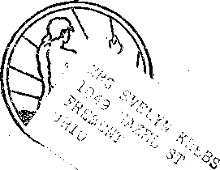

A JOURNAL OF FACT HOPE AND COURAGE
in this issue
DOES ANDREW MELLON CONTROL '
THE SOLAR SYSTEM?
A resume of the '.‘aluminum poisoning” issue.
. “TRUTH SMOTHERED”
WHEN THE WORLD WENT MAD
“SALT AND BONFIRES”
' QUESTIONS
Wi!!i answers by Judge Kutlierford, broadcast June 8 in tiie watchTOWEti national chain program.
every other WEDNESDAY
five cents a copy one dollar a year Canada & Foreign 1.5a
Volume XI-No. 283
CONTENTS
LABOR AND ECONOMICS
AGRICULTURE AND HUSBANDRY
Chile Idemnifies Crime Sufferers 686
Oranges in Palestine .... 685
SOCIAL AND EDUCATIONAL
Gatherings .......685
Sperm Whale off Vancouver . . 685
Constantinople Is No More . . 685
85,000 Soldiers Still Missing . . 685
Airplanes on Sale in London . 685
17,500 Suicides a Year .... 686
The World’s Widest Streets . 687
When the World Went Mad . . 689 “A Well of Water Springing Up ” 696 Borah’s Advice to the Young . 703
FINANCE—COMMERCE—TRANSPORTATION
Does Andrew Mellon Control
the Solar System? . . . 675
Object to Old Age Pensions . . 685
Mr. O’Donoghue’s Electric Bill 687
Municipal Ownership Pays . . 695
Soviet Matches in Belgium . . 702
SCIENCE AND INVENTION
Insurance Sold by Machinery . 685
Maizolith, a New Material . . 688
More Remains of the Giants , . 688
HOME AND HEALTH
Slaughter of the Innocents . . Health in Denmark During War Josephine Marie Carroll . . . Serum Treatment .....
No Aluminum for Thompson
Restaurants
685
Do 9
08 :
683
693
'RAVEL AND MIS C ALLAN
Floods in South Australia . . 694 “Salt and Bonfires’’ . . . . 695
The Loneliness of an Honest
POLITICAL—DOMESTIC AND FOREIGN
“Truth Smothered by Govern
mental Influence” . . . 680
Enforcement of Prohibition . . 688
OVhy Mooney Is in Prison . . 688
Boston Citizens Pining .... 693
RELIGION AND PHILOSOPHY
Seventeen Kinds of Mennonites 69f»
Questions . . ... . . . 697
Published every othei* Wednesday at 117 Adams Street, Brooklyn, N. Y., U. S. A., by WOODWORTH', KNORR & MARTIN
Copartners and Proprietors Address: 117 Adams Street, Brooklyn, N. Y., U. $. A. CLAYTON J. WOODWORTH . . Editor ROBKRT J. MARTIN .. Business Manager NATHAN H. KNORR .. Secretary and Treasurer
Five Cents a. Copy—$1.00 a Year Make Remittances to THE GOLDEE AG-.E Holice to Subscribers: We do not, as a rule, send an acknowledgment of a. renewal or a new subscription. A renewal blank (carrying notice of expiration) is sent with the journal one month before the subscription expires. Change of address, when, requested, may be expected to appear on address label within, one month.
The Golden Aye is published in six languages : English, Finnish, German, Nor-wegian, Polish, and Swedish.
Foreign Offices
British . ............ 3-1- Craven Terraco, London, W. 2, Bngland
Canadian ...........40 Irwin Avenue, Toronto 5, Ontario, Canada
Australasian . . 7 Beresford. I’d., Strathfield, Sydney, N. S. W., Australia, South Africa............6 Belie Street, Cape Town, South Africa.
Filtered as second-class matter at Brooklynj N. Y., under the Act of March 3, 1879.
Volume XI Brooklyn, N. Y., Wednesday, July 23, 1930 Number 283
Does Andrew Mellon Control the Solar System?
THERE are some people who believe that our earth is the most important part of our solar system. There are others who believe that America’s great financiers are gobbling up most of the valuable property in the world. There are others who believe that these great financiers, and especially Andrew Mellon, control the government of the United States.
Some might go so far as to say that the government of the United States controls the people of the United States, but right here is where we draw the line. Whatever the theories and facts may be in other lands, the theory in America is that the people of the United States own this country and that the government officials are their servants appointed by them to preserve order and to do such things, and refrain from doing other things, as the Constitution of the country stipulates.
One of the stipulations of the Constitution is that Congress shall pass no law abridging freedom of the speech or of the press. To us this means just what it says. We do not know how it looks to the present secretary of the treasury and head of the aluminum trust.
We have no personal acquaintance with Mr. Mellon. We know of him only as reputedly a man of great ability, a director in over forty of the largest corporations in the United States, and a fellow member of cabinets graced with the presence of Warren G. Harding, Harry Daugherty, Calvin Coolidge, Albert Bacon Fall, Herbert Hoover, and Charles Evans Hughes during the late oleaginous administrations preceding the present electrified one.
On October 6, 1926, the question was first raised in the columns of The Golden Age as to why the division of health of the United States treasury department cautions against letting food stand in aluminum dishes.
October 20, 1926, we noted that the total investment of the Aluminum Company of America was less than $3,000,000, but that its assets and cash dividends together then amounted to more than $136,000,000.
In The Golden Age No. 206 we mentioned that on February 17, 1927, out of 554 guests at a banquet in'Kansas City, all the food for which was carefully selected by experts and cooked in brand new aluminum ware, 150 persons became ill within twenty-four hours.
On November 16, 1927, we told our readers how to make aluminum hydroxide by boiling water half an hour in a clean aluminum dish; how to produce aluminum phosphate by cooking eggs in aluminum; how to produce aluminum chloride by cooking salted meat in aluminum. Aluminum hydroxide attacks the gastric juices of the stomach, and itself remains as a poison in the stomach, producing loss of appetite, pain, discomfort, nausea, vomiting, purging, congestion, hemorrhages and ulcer. Aluminum compounds cause red corpuscles to aggregate or clump, leading to anemia. Germany, France, Belgium, Great Britain, Switzerland, .Czechoslovakia, Hungary, and Brazil prohibit the use of aluminum compounds in foodstuffs. Aluminum hydroxide increases the production of hydrochloric acid in the stomach and thus predisposes to cancer, because every cancer patient has first an acidosis.
On December 28, 1927, Mr. Kitzmiller told us that though he had been eating crabs all his life, yet when he first ate crabs cooked in. aluminum utensils the crab- juice ate holes in his clothing and in his shoes, everywhere it touched them.
On March 7, 1928, was published the fact that all foods cooked in aluminum greatly increase the cancer reaction, and it has been found necessary to avoid aluminum dishes and utensils in the preparation of food for cancer patients. The same issue contained a report of the 200 church diners poisoned at the First Baptist
The qolden aqe
church at Punxsutawney, Pa., due to the fact that the entire supply of gravy was collected into one aluminum container, and it was first revealed to our readers that the managing editor of a great daily paper in Toledo was discharged instantly for allowing a report to be printed in his newspaper questioning the wisdom of the use of aluminum utensils.
On March 21, 1928, we first revealed to our readers the brilliant care which the aluminum trust takes of newspapers that mention aluminum poison. We saw how promptly the word aluminum could be whitewashed into the word “metal”, and good chickens could be turned into bad ones to conceal the real truth.
April 4, 1928, issue mentioned the nine-page attack on The Golden Age by the Correct Eating magazine, in which attack Dr. Alsaker became so much excited that he used the personal pronoun “I” a total of eighty-five times in the one article. The same magazine contained a nice full-column advertisement oE aluminum ware.
April 18, 1928, contained references to the testimony of two prominent physicians before the Federal Trade Commission, giving at length their rea.sons for the opinion that aluminum compound was poisonous to all forms of life, including the higher animals.
May 2, 1928, a subscriber reported that after eating food cooked in aluminum utensils an ice-like film formed before his eyes, lasting for half an hour, but that seven days after discarding aluminum utensils the blindness gradually disappeared, was gone altogether in a month, and has not returned since.
May 16, 1928, discussed at length aluminum compounds in city drinking water, in medicine, from water purifiers, in baked goods, in whiskeys, in baking powders, in injections before major operations, in 'bases for false teeth, and in cooking utensils.
May 30, 1928, tells how a woman saved her finger from amputation. Her doctor had tried for two years to reduce the swelling, but when she discarded all aluminum at once, the growth disappeared in four weeks.
July 11, 1928, another lady subscriber who had been using aluminum utensils exclusively for twenty years reached a crisis where her physician insisted on an exploratory major operation at once. She immediately discarded all aluminum vessels and began at once to slowly gain in strength and in red blood corpuscles.
July 25, 1928, a woman suffering from low blood pressure who had to spend ten to twelve hours a day in bed and then got up tired, related how she left off cooking in aluminum and could actually feel how much better she felt each morning than the day before, and is sure that the publication of the aluminum articles literally saved her life and helped her to become once more a useful member of society.
August 8, 1928, contained the names and addresses and titles of more than thirty persons of prominence in the medical profession who have agreed and many of them have sworn on their oath that in their opinion the salts of aluminum are harmful in human food. The same issue reported a gentleman who at one time sold aluminum ware as having given up the sale and use of aluminum utensils on the ground that they are bad on the teeth and kidneys. This man is a graduate of the University of Pennsylvania.
August 22, 1928, a subscriber who had been suffering from stomach inflammation for several years recovered completely and regained his normal weight and health three months after discarding all aluminum cooking utensils. The same issue told of a family of four made ill from eating a pudding purchased in an aluminum pan. One of those who was made ill died.
September 19, 1928, one subscriber, subject to spells of sick headache, reported that they ceased entirely after giving up aluminum utensils. Another subscriber reported that oats cooked in aluminum made one of his goats sick, but when the same food was cooked in granite ware the diseased condition disappeared.
October 3,1928, a subscriber reported that she had been troubled with sore mouth, sometimes so sore that she could hardly eat. She stopped preparing her coffee in aluminum, and her mouth got well; but being in a hurry one morning, went back to coffee made in her aluminum coffee pot, and by noon was in such misery she could hardly eat her dinner. That night her mouth and throat burned so she could hardly stand it.
October 17, 1928, beans cooked in aluminum and left to stand in the aluminum vessel until thoroughly poisoned caused the death at Crowell, Texas, of the father of the family and a five-year-old daughter and the serious illness of five others.
October 31, 1928, reported benefits to the health of an entire family, and the recovery of two neighbors, one from severe pains in the left side, and the other, a man of eighty-eight years of age, from stomach trouble.
November 14,1928, a subscriber who had herself .been relieved of indigestion, headaches, and constipation, noticed that her dog, when given milk that had stood in aluminum would not drink it, but took it readily when it was given to him out of an earthenware crock. The same issue mentioned a workingman’s objecting to an aluminum pudding dish in his dinner pail; and gave another illustration of a dog’s refusing to drink milk that had stood in an aluminum kettle overnight. The same issue also contained reference to' Dr. Murphy’s great discovery that cancer is caused by chemical poisons.
November 28, 1928, contained the frank admission of Dr. Royal S. Copeland, United States senator from New York, and former commissioner of health of New York city, that food should not be allowed to remain overnight or for any period of time in aluminum cookingware.
esting information
or fresh
that when rhubarb
December 12, 1928, we published the intertomatoes are cooked in a discolored aluminum pan, they will ‘scrub’ the pan more thoroughly than can be done in any other possible way. The dirt goes into the food; the food goes into the human being; and the undertaker gets the remains.
December 26, 1928, a subscriber reported a complete recovery from severe stomach trouble, dizzy spells and intense vomiting spells, after she gave up eating food cooked in aluminum utensils.
January 9, 1929, Dr. Betts reported that an agent in New York city who was selling his books, An Opinion Upon Aluminum and Aluminum Poisoning, was deliberately pushed in front of a subway train and his skull was crushed. It is not known who bumped him off, though the reason why is quite apparent.
January 23, 1929, referred to the poisoning of the Peters family, evidently due to eatingbeef and cabbage boiled in an aluminum kettle. Two children died as a result of this poisoning, which sent five of the family to the hospital.
February 6,1929, reported the Memorial Day poisoning at Bennington, Kans., in which practically all the food was cooked in aluminum utensils, allowed to stand in them, and warmed in them.
February 20,1929, contained an article showing that milk sickness and trembles in cows and other animals, including cats, rabbits and human creatures, is brought about by the drug aluminum phosphate, which occurs in excessive quantities in certain areas. The effects are constipation, rapid loss of weight, weakness, torpor, vomiting, tremor, jerking movements, convulsions, paresis, diarrhea, and death.
March 6, 1929, a subscriber who had ulcers of the stomach found that he got well after stopping the use of aluminum cooking utensils and baking powders.
March 20,1929, announced that the Perfection Aluminum Company of Cleveland, Ohio, had closed its doors to the manufacture of kitchen aluminum ware. The same issue also mentioned that during the war the soldier boys, supplied with aluminum canteens and cooking outfits, contracted trench mouth, now believed to be traceable to their aluminum cooking utensils.
April 3, 1929, a cook who had recovered from acute aluminum poisoning after abandoningcooking utensils, invites skeptics to stew apples and sugar to a sauce while cooking them in aluminum utensils, and then set them away in the kettle. The juice of half a lemon should be added before cooking. The cook thought the result would be fit only for the garbage cam
April 17, 1929, an experienced and capable dietician reported that after the family began using aluminum cooking ware his wife suffered with frequent sick headaches, accompanied with vomiting, while his youngest son was troubled with eczema-like sores in the summer and fall. With the discarding of aluminum in the kitchen, both his wife and his boy got well.
May 1, 1929, reported many interesting experiences and observations with aluminum. Among these were the instructions sent out with the first aluminum ware to the effect that certain foods should not be cooked in aluminum. If the aluminum manufacturers knew this at the outset, how does it come that they cannot find it out now? An aluminum kettle filled with buttermilk in the evening is black in the morning, and the buttermilk also is black.
May 29, 1929, a ham cooked in an aluminum roaster and left in the roaster pitted it all over the bottom so that one could see through it. Two healthy kittens brought in from the barn in cold weather and given their milk in an aluminum dish sickened and died the following morning. A man who had ulcers of the stomach stopped eating food cooked in aluminum cooking utensils and got well.
June 12, 1929, an experienced cook noticed that cakes baked in an aluminum pan have a distinctly peculiar taste on the outside of the cake.
June 26, 1929, contained another splendid article by Dr. Betts. The same issue showed that sulphate of aluminum ate through the paint and .attacked the steel plates of a tank in a Philadelphia navy yard.
July 10, 1929, revealed the Aluminum Company of America as advertising for laborers over twenty-one and under forty-five years of age to work ten hours a day at thirty-eight cents an hour.
July 24,1929, cited a Pittsburgh dispatch that the Mellon family made a profit of $300,009,000 in the first five months of 1929 in the rise in value of stock of the Aluminum Company of Anierica and the Gulf Corporation of Pennsylvania.
August 21, 1929, contained another of Dr. Betts’ splendid articles.
September 4, 1929, Dr. White reported that many of his worse cases of arthritis, colitis, “stornach-itis,” were readily cured as soon as the aluminum dishes were smashed. The same issue refers to the warning of an aluminum salesman that food should not be allowed to stand in the utensils. His remark was not taken seriously, which resulted in the death of the head of the family.
September 18, 1929, contains.a reference to the $30,000 three-yoar investigation made by the National Coffee Boasters Association proving that coffee cannot be properly prepared and does not taste right if made in an aluminum pot.
October 2, 1929, tells of a subscriber who was often subject to impaired taste, sore mouth, constipation, colds, low blood pressure, gall bladder trouble and anemia, and recovered from all of these when she gave up her aluminum utensils.
October 16, 1929, narrated the experience of two pairs of twin goats. The one pair, fed out of aluminum, died within seven weeks. The other pair, fed from granite, never missed a meal and are in splendid condition.
October 30, 1929, narrates the experience of restaurateurs in Winnipeg who tried to advertise that they protected the health of the public and did not use aluminum utensils. A hardware compare of the city, evidently backed by the aluminum trust, forced the publisher of the paper to change the advertisement.
The foregoing is a brief chronicle of some of the evidence which appeared in the columns of The Golden Age up to and including the end of October last. Since then, in every issue, similar items equally interesting and equally important to the welfare of the American people and the people of other lands have been published on this subject, and will continue to be so published, because this magazine is run, not to please Andrew Mellon, nor the government of the United States, nor anybody but Almighty God, the only One we fear, and (barring those in full harmony with Him) the only one in these days for whom we have any respect.
On November 13, 1929, there meandered into our office a gentleman who represented himself as an attorney sent hither by the Federal Trade Commission, one of the instruments of the United States government, supposedly concerned with the subject of seeing that the trade of the country is carried on in a proper manner. We had no business with this gentleman, nor he with us, as we are exclusively publishers, and not engaged in trade in any manner.
It was necessary to tell the gentleman that freedom of the press still maintains in this country, that it is held very dear by us, and that Congress itself cannot pass a law that can prevent us from stating what we believe to be the truth as respects the deleterious effects of the use of aluminum utensils upon the health of those whose food is continually prepared in them.
After a quite lengthy interview, which was not without its amenities and asperities, he withdrew, taking with him a few copies of The Golden Age with our assurance that the articles which they embraced on the aluminum question were but a bagatelle as compared with what we had published and intended to publish on the subject. '
On May 26, 1930, the gentleman returned, and we presume cared as little about undertaking the errand of again interviewing us as we did about having him come. So that makes it even, anyway. The fact of the business is that some financiers and some politicians in this country give us a pain. They seem to think that the legacy of the ‘divine right of kings’ has somehow landed on their brow. The Federal Trade Commission is doing a splendid work in exposing the crookedness of the Power Trust; but when it comes to trying to tell us how to run The Golden Age, that is a job outside of its bailiwick.
If we think fried ham is not good for people, do we have to run to some commission or other and locate the fried ham department and ask them what we may say about fried ham? If bleached flour gets on our nerves, must we look up the bleached flour department before we dare ‘holler’ about it? If we think straw hats or lip sticks or bustles or corsets are ‘no good’, must we get permits from the straw hat, lip stick, bustle or corset departments before we dare open up on the subject? Not that you could notice it. ■
But perhaps the fried ham, bleached flour, straw hat, lip stick, bustle and corset departments shall say we are interfering with their business, or with the business of those who placed them in office. That would all be very sad, but it is the penalty one has to pay for living in the land of the free and the home of the brave in this twentieth century.
Suppose some day we should suddenly come out advocating a diet of nothing but fruit, and advising everybody to wear summer garments consisting of a one-piece abbreviated suit. All the departments would be on top of us at once, because we would be interfering with everybody’s business.
But there is a bright side to it. Nobody need pay any attention to us unless he wishes. So freedom of the press has its drawbacks. If there is no sense to what we say the people will find it out sometime, and then good-bye Golden Age. But suppose w’e happen to be right on this aluminum utensil business, and a thousand and one other things, then who is going to undertake to stop us? He has yet to be born.
Again. We are very much interested in the gospel truth about God’s kingdom. We are much pained to find that this good message is being blackguarded and lied about in every corner of this country, constantly. Do we run to the Federal Trade Commission or the pulpit commission, or the collection basket commission, or some other commission, and whine about what hurts our greatest interest in life? Not at all. And it Avould not do us any good if we did. A cause worth while must be a glutton for punishment.
Now it so happens that some of the aluminum cooking utensil people are quietly going over to the manufacture of stainless steel. They would not be doing that unless they knew in their hearts that it is the right thing to do. We are really trying to help these fellows do what they must do sooner or later; so, in reality, we are the truest friends of the people that are in the cooking utensil business. Sometime they will be glad we were of this kind.
Well, our friend from Washington came to see us again, and we gave him a letter of introduction to our counsel, a gentleman for whom we have the highest esteem. The editor went along, to enjoy the. fun. It was a wonderful two hours, one of the kind of experiences that linger in the memory.
The gentleman was questioned by our attorney as to who sent him. He seemed unable to make satisfactory, definite answer. He was reminded that in no honorable court in Christendom can a complaint be lodged against a person or institution without making known the identity of the complainant. This would have been enough to justify termination of the interview, but our attorney was patient and considerate, and wanted to know what was really wanted.
The questioner then said that he wanted to know’ the size of the subscription list of The Golden Age. ’With dignity and firmness our attorney explained to him that that is the affair of The Golden Age itself, and none other. When the questioner thought he could get that information elsewhere it was intimated to him that that was not impossible, but seemed not to be a proper matter of his concern.
The questioner then desired to know the financial backing of the paper, from what source its funds are procured. Again it was explained to him that this also is the affair of the magazine itself; yet he was assured that the funds are not supplied by either capitalists or bolsheviks. Our subscribers well know that The Golden Age lives because it honestly tries to tell the truth on all subjects. They pay the bills; no others.
There was much learned discourse on the subject of freedom of the press. The questioner indicated that it was his ambition only to get the truth. He got plenty of it. He was for the people. So are we. He was for trade. So are we. But we are particular about what kind of trade. This is where the shoe pinches. From our personal point of view this man had no more business to come into a publisher’s office and ask such questions than we would have to inquire what he ate for breakfast or when he brushed his teeth.
We conclude this little story with an affidavit by Doctor Betts, which we are sure will be of interest to all our readers. It seems to us that it is about time the government got around on the right side of this problem and tried to do something for the people. If Mr. Mellon objects, give him a one-way ticket to Pittsburgh. The truth oh this aluminum cooking utensil question is with us, and the people are with us, and are convinced. A careful inquiry in any hardware store shows that the dealers see the handwriting on the wall. Meantime there is no objection to using aluminum for automobile chassis and other things for which, as a metal, it is preeminently fitted.
“Truth Smothered by Governmental Influence” By Dr. Chas. T. Betts
IN 1913 the writer’s head th was in such a serious condition that a trip was made to Colorado. It was while there that by a simple observation with an aluminum cup and soda water he obtained the information that aluminum produces gas in the presence of an alkali and liquid. He returned home and investigated the aluminum culinary department and found that the metal dissolved from the utensils and contaminated foods cooked therein.
When the dissolved metal is ingested and comes in contact with the alkaline juices of the body, gas is formed in the alimentary tract, which was the evident agent that produced the disease which caused the journey to the West.
Then for a period of about twelve years a clinical examination was made with a large number of patients and it was found their recovery was as remarkable as was that of the writer after discarding the aluminum dishes. After all of this data was compiled a decision was made to publish, the facts in booklet form. The writer visited a number of printers before one was found who would print the monograph, and then it was accomplished only after considerable consultation with their attorney and the manuscript changed from statements ot fact to AN OPINION and QUESTIONS.
An Opinion Upon Alumimim was printed October, 1926, in Toledo, Ohio, without the printer’s name appearing thereon. Reasons for this were definitely expressed. Before the abovementioned work was completed the writer found that between the years of 1915 and 1919 an examination regarding the. physiological effects of aluminum had been made at the University of Michigan. Extensive examination had been made and the findings Avere about to be published, when an officer from the Internal Revenue Department appeared upon the scene, according to the scientist’s statement quoted below, and this happened just before the findings at the university were to be published. (Reader, please note that this same thing happened in the writer’s office before his book Aluminum Poisoning was published.) Strange how these coincidences do happen!
The scientific investigation upon aluminum poisoning has been extensively made throughout the land, and thousands of dollars have been expended. The results of this work have been tabulated, but the record, is usually kept under cover and is known as a “confidential” or “secret” document. ■
Such an examination was made at the Columbia University, of New York, by Dr. William Gies. His findings were placed in printed form occupying about 100 pages of a 12-mo book. The writer has attempted to secure a copy of this work at various times and has received silence for a reply in every instance. The doctor gave testimony to the Federal Trade Commission in Docket No. 540; the examiner reported four of his experiments. Eight studies in the metabolism of aluminum have been completed at the toxicology department of Yale University. This was published in the American Journal of Physiology, September, 1929, $3.00 a copy. .
Dr. Harry Gideon Wells, of the University of Chicago, made an extensive study of the effects of aluminum compounds on living tissue, which was published in the “Archives of Pathology”, August, 1929. AU this information is for those doing scientific work only. Following is a typical letter of those received from University professors:
■ December 2-1, 1929
Dr. C. T. Betts
320 Superior St.
Toledo, Ohio
Dear Sir:
I have no supply of reprints available for the general public, and it will. not bo possible for me to comply with requests sent me by laymen and people not engaged in scientific work. . . .
Yours very truly,
(Signed) H. Gideon Wells.
Why is this material copyrighted and ■ not available to the writer or the public? Why is it that the universities of our land, the American Medical Association and college professors so carefully copyright their work and do not allow the lai tv to secure this information? THE .REASON IS" APPARENT. Below is quoted a copy of. a letter received from the scientist in Michigan, who evidently suspected that the writer is also a scientist and knows the ethics sufficiently to avoid giving these matters to the public, and therefore gladly gave a short synopsis of his work:
We did animal experimentation first, then the various food stuffs were taken up, and finally we observed the effects upon humans. Many compounds were isolated—hydroxides, oxides, nitrates, chlorates and various others. All except a few wore harmful to man when taken internally—some by the mere contact with the epithelial tissue, such as gum tissue. We noted that there were throat involvements, gastric involvements, nephritis, and even gall bladder manifestations. The greatest affinity was for epithelial tissue, but connective tissue was involved in some cases. I thought the subject was well known and settled. However, if such is not the case, then I am glad you are presenting the dangers to the public.
The above letter came at the time the writers first article appeared in the Toledo Times, December 13, 1925, and the discussion of the question of aluminum compound poisoning had reached extensive proportions in this country.
The writer was indeed happy to find that his work for twelve years from a clinical standpoint was not to be cast aside as of no value when here he had the backing of one of the foremost scientists in America from the University of Michigan.
A request was at once made for all the data or a transcript of what he had upon the question. The writer was previously under the impression that he was the only one who had observed the poisonous effects of aluminum compounds, so was interested to find that others had made a similar discovery long before the writer had found them, but the scientist’s answer to publish the •matter was very illuminating. The writer has found few persons in prominent positions who do not also have fear of the federal revenue department.
The following answer* was received to the request for publishing the findings at the University of Michigan:
January 6, 1923 Beau Du. Betts :
Kindly treat this letter strietiy (confidential) for reasons you will note.
When my work on aluminum was about completed in 1919 and I was getting it ready lor publication my office vens invaded by an income tax man from the collector of internal revenue and lie started to go over my books, It took me some time to catch, on to the meaning of all this, but I finally “tumbled”. Suffice to say that I have never published my work and I diave not been bothered since by anybody from the collector’s office.
Of course, it is merely a coincidence that Mr. Mellon rules the Treasury of the United States and is the head of the Aluminum Company of America. No one can connect the two in any way with the dispute about my income tax or with any other person’s tax. However, Senator Couzens from Michigan thinks differently perhaps than myself. Suffice to mention that Senator Couzens is a wealthy man and can think out loud, if he so desires, while I am a professional man of poor financial standing and must do my thinking quietly, as I have to work for a living. Therefore, the warning to you to be careful unless you are prepared to fight back.
Kindly treat this confidential for reasons stated above.
The writer found that he had violated the rules of ethics of the scientists when he asked for the privilege of making these matters available to the laity. So far as I know, there has never been any public announcement of the findings upon aluminum at the University of Michigan. The influence or activity of the Treasury Department in this particular case, according to the above, quoted letter, has smothered the truth upon aluminum poisoning from reaching the public from one of the best universities in the land. Subsequent experiences have proven that what was true of the University of Michigan is true of many of our universities upon this sub-' ject.
Eleven months before An Opinion Upon Aluminum was published the report of Edward M. Averill, examiner for the Federal Trade Commission in Docket No. 540 was filed with the commission. About eighteen months after this occurred the writer found a transcript or printed copy in his physician’s office. An attempt was made at once to secure several copies of this work from the Royal Baking Powder Company, of New York city, respondent in the case. This was denied. They stated that the report was not for the laity, but only for those doing scientific work, and that if I would refer such inquiring persons to them they would probably forward a copy of the report.
The Royal Baking Powder Company case, which had been pending for more than five years before a federal authority, no doubt cost it and us (United States citizens) a tremendous sum of money. It is evident that the company felt justified in publishing the examiner’s report after the case was dismissed. The federal authorities thought otherwise. They claimed to have rendered no decision in the case, that they merely dismissed the formal charges before the commission. Therefore they held that the respondent had no right to publish the so-called “confidential” report of the examiner, and they reopened the case. The Royal Company appealed that action to the Supreme Court of the District of Columbia. The writer has not learned what disposition, if any, has been made of the case.
Upon reviewing the copy of Averill’s report the writer decided that the vast amount of scientific material revealed therein before our federal authorities upon the question of aluminum poisoning or the physiological effects of the ingestion of alum should be given to the laity. Plans were made to publish all or portions of this document, giving due and proper credit for the work. When the manuscript was ready for the printer the writer journeyed to New York and Boston in an attempt to secure a publisher for the work to be called Aluminum Poisoning. The question arose of the possibility of the book’s being “tied up” by litigation, should the second party (publisher) become involved.
It Avas plainly evident that the book would never reach the public if the Eastern publishers visited would secure a copyright on the work. While standing upon the grounds of Bunker Hill by the side of the monument the writer remembered the history of the place and decided to return home and publish the book under the name of the “Research Publishing Company”, so that there would be no one involved but himself. This was done in spits of the fact that the Royal Baking Powder Company frankly refused permission to quote their publication. This refusal was no doubt made on account of fear of further involvement with the Federal Trade Commission.
As above stated, the scientist had all his material ready for publication, when a federal authority appeared upon the scene from the Internal Revenue department. The writer’s manuscript -was about ready for the printer and a telegram, quoted below in Otis B. Johnson’s letter, came from our Federal Trade Commission, on June 15, 1928, stating that it would be “highly improper” to publish Averill’s report to that body, “in whole or in part.” The writer had no knowledge that our government officials knew that such a manuscript was being prepared. Instead of becoming frightened and laying it aside, as was done by my brother professional in Michigan, the proper credit to Averill was removed and portions of his report were published only as “testimony and evidence” given in the case.
The writer could not understand why Otis B. Johnson would be in such a hurry about this matter as to forward the demand for silence by telegraph. At first it was considered that someone had played a prank, and no immediate consideration was given it. During the day, however, it was thought best to secure a copy of the telegram which had been delivered over the telephone. After reading, it was thought best to write Mr. Johnson to determine for & certainty that it actually came from the commission. The following letter was forwarded at once:
June 16, 1928 Honorable Otis B. Johnson, Secretary Federal Trade Commission
Washington, D. C.
My dear Mr. Johnson:
I received a telegram from your office today that causes me to understand that the Federal Trade Com-■ mission is a secret Federal organization and that the testimonies given before the Trial Examiners, as well as the official reports or documents, are confidential instruments to the Federal Body, after the cases have been dismissed. Is this the intention of the telegram?
I have been to considerable expense in time and money, in preparing the new book—“ALUMINUM POISONING”— for distribution and will appreciate your advising me, under seal of the Federal Trade Commission, by letter, so that I will know that it (demand for silence) comes from our Federal officers.
Thanking you in advance for this courtesy, I am Very respectfully,
■ (Signed) C. T. Betts.
Apparently at the first meeting of the commission the subject was up for discussion and the following letter was in hand within twelve days after the telegram was received:
June 26th, 1928 Dear Sir: .
Your letter of June 16th was received and presented to the Commission, and in reply I was directed to quote my telegram to you under date of June 15th, as follows:
“June 15 th, 1928 “Charles T. Betts
c/o Research Publishing Co.
320 Superior St.
Toledo, Ohio
“Attention Federal Trade Commission called to circular announcing contents book proposed to be published by you entitled Aluminum Poisoning and containing quotations from report of Trial Examiner Averill of Staff this Commission stop Be advised Commission regards report Trial Examiner Averill as confidential document and its publication in whole or in part as highly improper stop Commission would appreciate advice your intention this respect.
“Otis B. Johnson, Secretary Federal, Trade Commission”
With reference to your statement relative to testimony and report of the trial examiner, ! was directed to say that the testimony of witnesses in formal docket cases and all the evidence introduced in these eases, is a public record, but that it is only the trial examiner’s report which is a confidential document.
As suggested in your letter of June 16th, I have affixed the seal of the Federal Trade Commission to this letter, and this seal, according to the statute, shall be judicially noticed.
By direction of the Commission.
Signed—Otis B. Johnson, Secretary. [Seal FEDERAL
TRADE COMMISSION
UNITED STATES
OF AMERICA]
The reader will note that the above letter contains a threat in the last paragraph, that ‘according to the statute the seal of the Federal Trade Commission, attached to the letter, shall be judicially noticed'’; whatever that means.
It was thought by the writer that this was only an intimidation procedure and that if Averill’s report was published in whole or in part some federal statute would apparently be violated.
If Averill’s report was a secret federal document it should have been kept secret, but as it was published for distribution to various persons and sent through the United States mails it was no longer a secret document and could be quoted by anyone so desiring, according to legal advice.
Without much delay the manuscript was placed in the printers hands and in due time the book Aluminum Poisoning appeared and was distributed to all those who had prepaid or given pre-orders for the work. Within a few days after the first copies were distributed a federal examiner, Mr. James Horton, called at my office, 320 Superior Street, Toledo, Ohio, and informed me that I was informally charged with conspiracy and violation of the Clayton Act, and that he was vested with authority to give me a hearing and to make an examination of my affairs. '
I asked him who my accusers were and he stated that he had no authority to give me that information. I did not know that the Constitution of the United States allowed a federal 'authority to place charges against a citizen of this land to be investigated and to be given a. hearing without knowing who the accusers were in the ease, but this seemed to be the situation according to Mr. Horton.
I immediately called my attorney to ascertain. for a certainty that the gentleman Jiad proper credentials and was vested with authority to make the examination as above stated. Upon being informed that if I did not allow it the federal authorities would continue to harass me, by demanding that I bring my correspondence and other data to a federal court or possibly to Washington, causing annoyance and endless expense, no objection was raised.
The. examination was conducted in the week of October 10, 1928. There was no objection to the examination by myself or upon the part of anyone connected with the printing, binding and other work with the preparation of the books An Opinion Upon Aluminum and Aluminum Poisoning. I offered to assist or to give any desired information available upon any items that might be desired.
Upon concluding the examination Mr. Horton advised that it was his opinion that we were both gentlemen. I especially appreciated this opinion of himself. He volunteered the statement that it was his opinion that I would become legally involved from what he termed a “back wash” by continuing the work upon this subject.
It is stated by innuendo by practically all of our so-called “national health writers” belonging to the American Medical Association that the writer is paid by anti-aluminum interests to father the aluminum crusade. Recently similar information has been given by the Bureau of Home Economics of the Agricultural Department by letter. In the public press can be found articles which are published upon this subject in many parts of the country, of which the following is a copy. Why has the Agricultural Department seen fit to defend aluminum ware when they have made no examination of such wares?
NO HEALTH MENACE FROM COOKINGIN ALUMINUM WARE
By Ruth Van Deman
Associate in Publications and Information Federal Bureau of Home Economics
Some way the idea has got abroad that aluminum ware is dangerous to health—that foods cooked in aluminum utensils absorb some kind of poison.
How such a notion got started is hard to say. Certainly, it was not really to protect the public from harm. Perhaps the original idea was to help the sale of some other’ kind of cooking utensils.
But, in the end, such trade wars serve mainly to befuddle the public. They benefit nobody.
The Department of Agriculture, itself, has not conducted any experiments on aluminum ware. We have, though, made a careful study of the scientific literature reporting experiments done by other reliable research institutions.
Not one statement can we find, backed by scientific research, that even suggests aluminum ware as the cause of disease or as a menace to health.
The writer, on September 19, 1928, published in The Golden Age, of New York city, a challenge to pay to Dr. Morris Fishbein, editor of the American Medical Association Journal, one thousand dollars, if he or any of his agents could judicially prove that one hundred dollars or more has ever been paid to me by any persons, corporation or group to whose interest this crusade would be of financial benefit. I make this offer now to pay $1,000 to any charitable institution designated by the Court if it can be judicially proven that I have accepted $10 or more in money or bonds from any source whatsoever for the furtherance of this crusade, except for the literature which I have had for sale.
is’
Toledo, Ohio Juno 2nd, 1930 State of Onio )
County of Lucas ) ss:
Dr. Charles T. Betts of 320 Superior Street, Toledo, Ohio, first being by me duly sworn according to law deposes and says:
THAT the foregoing statements composed of ten typewritten pages, which also contain my initials on the margin of each page thereof, are true to the best of his belief and knowledge.
Dated at Toledo, Ohio, this 2nd day of June in the year One Thousand Nine Hundred and Thirty.
Witnesses:
Irene Gnieser
F. G-. Hufford
C. T. Betts
Subscribed and sworn to before me this 2nd day of June, a notary public within and for Lucas County, Ohio.
John C. Budd [Notarial Seal]
[Signed] John C. Budd Notary Public Lucas County, Ohio
Santa and Satan
A WRITER in Cappeds Weelclg calls attention to the fact that Santa and Satan are composed of the same letters arranged differently. The odd thing about this is that St. Nicholas is another name for Old Nick, which, as everybody knows, is Satan himself.
AT A labor convention at Atlantic City in April the delegates rose and remained standing in silence three minutes in honor of and out of respect for the founder of the Christian religion, Jesus Christ.
THE Vancouver Sunday Province publishes a picture of the head of a sperm whale taken off the coast of British Columbia, and says: “This whale could easily have swallowed Jonah, for it is not unusual to find a ten-foot fish reposing whole in its belly.”
CONSTANTINOPLE has gone the way of St.
Petersburg and Christiania. It has ceased to be, under its old name. The new legal name of the city once called Byzantium and later named after the emperor Constantine is Istanbul, and that is the name by which it will henceforth be known.
85,000 Soldiers Still Missing
TWELVE years after the war eighty-five thousand soldiers are still missing. No doubt most of these were slain, but some are believed living in other countries under assumed names, having remarried and not wishing to return and face bigamy charges. Numerous others are insane.
Object to Old Age Pensions
THE Manufacturers’ Association of New Jersey has gone on record as opposing old age pensions. The ideal employee, it seems, is one that will work his head off for small wages until he is forty years of age and then quietly submit to being dropped into the ash can without remuneration and without protest.
Slaughter of the Innocents
AT THE Luebeck Home for Infants eight babies died and twenty-four others were made seriously ill because the physician in charge inoculated them with tuberculosis germs from cows. After the babies had been slain the treatment was ordered stopped immediately, and yet the semi-apology was made that this outrage was “the method commonly in use”.
TN Germany a person may purchase insurance * for one or two days merely by dropping a nickel in the slot. The apparatus receives an imprint of the purchaser’s thumb. The policy is printed on a card..
rpHE work of restoring the Parthenon, at Athens, has been in progress for some time and is now so far advanced that the excellent work which has been done by the artists is becoming apparent. The northern facade is completed and the effect is said to be extremely fine.
AVIATION has become so popular in Britain that Selfridge’s,' the leading department store, has installed an airplane department, handling English, German and Italian planes. Eight of these were sold in the first two weeks after the department opened. Prices range from $2,800 to $4,000.
Borden County, Texas
BORDEN county, Texas, is a queer county.
It has a courthouse and jail, yet in thirty-nine years there has not been a prisoner in the jail. In Borden county there is no railroad, no physician and no preacher. The sheriff of the county is seventy-five years of age and works as a cowboy.
Oranges in Palestine
A JEWISH orange grower who recently visited California declares that on a given area of land almost twice as great a crop of oranges is grown in Palestine as in California. The number of trees is greater in the same area, the yield per tree is greater, and the trees come to fruitage earlier.
Hot Winds on the Sun
DY SPECTROSCOPIC methods it has been found that in the sun’s upper atmosphere there are hot east winds that blow at the rate of 240 miles an hour. These regular and slow-moving solar currents are not to be compared in speed with the blasts which occasionally burst from its surface and speed outward at the rate of thousands of miles an hour.
Hot Cross-Buns
THE sign of the cross on hot cross-buns is not a representation of the cross upon which Jesus was crucified, but is the sign of the horns of the sacred bull or boss, the derivative of the word bun. The ancient custom of marking the cakes used at the pagan festival lias lost its significance and is often misunderstood to have reference to the cress.
Frogs Sing Only in the Dark
IT HAS been found that frogs sing only in the dark. Turn an electric light upon their habitations and they no longer wish to hear themselves. This is the way it is with the antitypical frogs that have filled the earth with their croak-ings on militarism, hell fire and the divine right of kings and clergy. As the light of the new day is turned on they become silent.
Distress in Raleigh
THE Raleigh (N. C.) News and Observer calls attention to the fact that there are
250 families in Raleigh that are appealing for food. Meantime Uncle Sam lias 100,000,000 bushels of wheat that lie cannot sell. Why not let some of those Raleigh folks eat some of it? It would taste a lot better than nothing, and might, in the end, be a better investment than a battleship.
17JKN) Suicides a Year
A MERICA has 11,000 murders a year, 17,500 suicides a year, and 31,000 automobile deaths a year. Last year, on account of the stock market collapse, there was a considerable increase in suicides. New York city’s record was 1,255; Philadelphia, 337; Los Angeles, 271; St. Louis, 186; Cleveland, 170; Baltimore, 123; Washington, 120; Minneapolis, 113; Boston, 112; Milwaukee, 104; Pittsburgh, 100.
Prayer at the Divinity School :
AT THE Divinity school of the University of
Chicago it is said that representatives of thirty churches are putting religion to the test. Dean Mathews of the school is alleged to have said that by prayer a man could make; more money, get a better job, be more popular, in fact get about everything he might want intelligently and morally; all of which, sounds mighty strange to us, and we think would sound equally strange to God and Christ and the angels.
Chile Indemnifies Crime Sufferers
HILE has undertaken wholesale prison reforms and is building a new prison which will occupy one hundred city blocks, and include the farm, hospital, gymnasium, concert hall and other features of the most modern prisons anywhere. The prisoners will work for wages and a part of their wages will go toward indemnifying the victims of their crimes.
Health in Denmark During War
TpldWER people died in Denmark during the
World War than at any previous time in the history of the country. The reason is that food supplies were cut off, it was necessary to kill the pigs and the cows, and the people ate the rough foods, barley, potatoes and bran, theretofore fed to the cattle. The country was virtually meatless.
What Is a Boy Worth?
JT^OR the average family with an annual in-x come of $2,500 it costs $7,238 to rear a boy up to eighteen years of age; so says the Metropolitan Life Insurance Company. Speaking economically, a boy is worth. $9,333 at birth, is worth $15,050 at six years of age, is worth $21,500 at twelve years of age, and $28,654 at eighteen years of age. But a good boy is worth several million times that to a fond parent.
Jewish Population of Palestine
FipHE Jewish population of Palestine has now -*L grown to 162,000, or 18 percent of the total population. Palestine is said to be one of the few places in the world where work is now plentiful. The Zionist organization has asked the British, government for permission to bring in additional immigrants, but this permission though at first granted was at last reports held up.
Ivan Kolesnikov, Cobbler
Tvan Kolesnikov, cobbler, stole the diploma of an assassinated surgeon at Kiev, Russia, and performed six hundred major operations in Russian hospitals before it was discovered that he was not a graduate surgeon. He has been sent to prison for six years. The odd thing about it is that the percentage of recoveries from the operations which he performed was much higher than that of the average hospital surgeon in Russia.
MEW ORLEANS has one street 438 feet wide and several, others ranging from 160 to 267 feet. The Champs Elysees in Paris is 250 feet wide, the Beeper Bahn in Hamburg is 210 feet, wide and the Ring Strasse in Vienna is 185 feet wide. The main business thoroughfare of New Orleans, Canal Street, is 171 feet wide and is claimed to be the world’s widest main street of businss.
Women Getting Too Much Smoke
OME of the women who do not like too much tobacco smoke are getting too much of it and are beginning to rebel. It seems that all kinds of women’s shops are now being patronized by smokers who smoke while they shop, thus adding greatly to the fire risks, as well as to the discomforts of the women who are content to remain feminine. The non-smoking women complain that the women who smoke do not smoke like gentlemen, and they are probably right.
Profits to Five or Seven Companies
ECAUSE they cannot even buy a yard of wire without sending the order through one of the parent companies, the users of electric current all over the country are paying more for their supplies than they should, and in many places there are from five to seven companies one above the other between the man who consumes electric current at ten. to twenty times what it costs and the man in Wall Street who sets the price for it and supplies propaganda to the local newspaper.
Josephine Marie Carroll
Josephine Mabie Caebcll, 420 Union Street,
Jersey City, N. J., at the ago of eighteen months trippad and fell over a rug. Thereafter for three years she was under the care of a hospital, twenty-one months of which time she was strapped to a board and at the end of the period was worse off than when the treatment began. Thirty-seven days after her first chiropractic adjustment she was able to walk for the first time since her fall, She now walks all about the house, playing as do other children, and it is expected that in a few more months she will be as well and strong as any other child on the block. '
HINESE bandits who successfully kidnaped wealthy travelers passing through their haunts are said to be building a temple in northern China as a sort of thankoffering, We cannot but wonder how many temples in Europe and America have been erected with funds obtained by equally dubious means. The Chinese are often said not to have much originality, but to be great copyists.
Vaccination versus Baptism
HE new regulations in Mexico city are that babies may not be presented for baptism until they have been vaccinated. This is a new one. The baby must, apparently, go to hell forever if its parents do not believe in vaccination. Even New Hampshire has not proceeded that far yet, but is on the way. The Bible says nothing about baptizing infants, and nothing about vaccination either; yet it seems that, if some people are right, both are essential to salvation and the vaccination must come first.
Jobless Protestant Ministers
ISHOPS are complaining that they have too many men and not enough jobs for them as ministers of Protestant churches. The villages of America are falling to pieces and cannot afford to maintain churches as hitherto. Catholic papers declare that both in Europe and America there are large numbers of Protestant ministers who are applying to them for jobs, and are willing to believe almost anything or do almost anything except work if only they can find some way to be supported.
Mr. O’Bono glute’s Electric Sill
WRITING in the New York Times, John G.
O’Donoghue, of Jamaica, N. Y., declares that in the first six months of 1926 he lived in Toronto and his electric bills came to $8.18. Moving to New York city his bills for the same sized family, the same sized apartment and the same electric utensils were $24.53. Naturally, Mr. O’Donoghue thinks somebody else is getting $32 a year away from him; and he thinks right. But look at all the legislators, college professors, newspapers, bankers and other■ public-spirited people in America who have to be purchased, and it becomes clear that the $32;is not all clear profit, though it is mostly so.
MAIZOLITH, a new material, is made from corncobs and cornstalks, ground fine, boiled with caustic soda, washed, beaten and dried at high heat. The result is like stone, and it is believed it will be very useful in the manufacture of noiseless gears, door knobs, handles, and other similar articles.
Wilbur J. Murphy, M.D., writing in Health Culture for March, says, “All serum treatments are useless and in error. Serums can give no immunity and can only hasten a fatal ending which vivisection’s methods have induced, and it is time their failures were exposed.” This general statement Dr. Murphy applies specifically fo the insulin treatment of diabetes, the rabies antitoxin treatment of rabies and the intramuscular' injections of blood to prevent measles. .
TT uston Thompson, former chairman of the Federal Trade Commission, in an address before the Institute of Justice, Chattanooga, told the simple truth when he stated that America has become a land of glorified clerks, taking orders from the Wall Street crowd, without ever seeing the men who dictate the policies they are putting through. The way the thing is now engineered the insurance funds of the nation and the profits from the chain stores furnish Wall Street with the rawhide thongs wherewith to cut off the breath of the people.
More Remains of the Giants
/TORE remains have been found of the giants ■*■*-2- that lived before the flood, these giants being the result of the improper union of angels and women. This time the findings are in a cave in Nevada, where charcoal has been found under an undisturbed stratum of seven feet of earth. This earth was washed over the charcoal during the flood, but imaginative scientists are trying to prove that the man that burned the charcoal lived twenty to thirty thousand years ago, and that the dust has been sifting over his charcoal all that time. How strange that a scientist should dodge the reasonable and sensible explanation of the Scriptures for the unreasonable imaginations of man!
A MERICAN granaries are full of wheat that cannot be sold and in a little while there will be millions more bushels added to what is now on hand. Why not do the generous thing and give this wheat to the starving Chinese until some way has been devised to persuade the rest of the world to buy from America wheat which they can buy elsewhere for less money? A year’s crops could be sold for the cost of but a few battleships.
CALIFORNIA Vineyards Company, Inc., 1885 Industrial St., Los Angeles, Calif., sends out from New York city under first-class permit No. 3939 an alluring statement that there are 20,000,000 gallons of finished wines in the wineries of California and that they have deposited a $10,000 bond with the Lake Shore Trust and Savings Bank, Chicago, guaranteeing that they can deliver the goods to those who become their customers. Interesting, is it not? Let’s see. Who is this that is enforcing prohibition ?
TN AN open letter to Liberty magazine, Tom Mooney, protesting against the injustice done to him by an article by Sidney Sutherland which had previously appeared in its columns has the following to say in regard to one of Sutherland’s charges. Incidentally, this paragraph seems to show the reason, and the only reason, why Mooney is kept in prison for a crime which was committed fourteen years ago by another man. Mooney says:
It is a deliberate falsehood to say that I am an enemy of all churches and governments. I do not go to church: that does not make me an enemy of all churches. My religion is Labor. The Labor Temple is my church. The Christian religion is founded upon the life and teachings of Christ and his apostles. Christ was framed, tried by a jury in a court, convicted and sentenced to death by the Interests of his time, and all of this was done by due process of law. He was an agitator, a disturber, a trouble maker and a hell raiser in the eyes of the Interests, and that is why they had him crucified (executed). Christ drove the money changers from the temple. They were the equivalent of our modern bankers. What would happen to anyone today if he tried to drive the bankers cut of the churches? He too would be crucified.
When the World Went Mad
A Thrilling Story of the Late War, Told in the Language of the Trenches
Copyright, 1930, by Daniel E. Morgan {Continued')
Another Noble Spirit
I met Kaulb. We greeted each other. We had not seen each other since our days of training in the good old U.S.A. I told him my greatest worry right then was where I could get a bit of food. Kaulb had a can of beans. Their objective was to our right. He must be going. We would divide the beans, but there was no time. He said, “Keep them,” and was off.
How different this was from most of the officers, who thought only below their necks, and grabbed all the cans of jelly or sweets before they ever reached us. Not so with Kaulb. He could not be so selfish: he was only a poor dog like the rest of us.
We lay waiting in the woods. For what, I do not know. We had to threaten the green troops (our replacements), to keep them under cover. When the planes staged a fake battle all the recruits came out of their hiding places to watch the affair. The planes were the eyes of the enemy artillery, looking for a prey. This we knew only too well from previous experience.
Some of the old-timers helped to keep the new troops under cover with the aid of their automatics. We would not have shot any of them, but, still filled with the hot air pumped into them on the other side, and seeking adventure, they were endangering their lives and ours. Our chief business at this stage was keeping alive. When our losses became heavy enough that we could not hold any longer, we would be relieved.
Living in a Toilet
By now’ the enemy was preparing to force us out of our newly-driven wedge. The eagles of the air flew furiously to and fro. We heard the new batteries as they were being tried out as to range, etc. We pushed back a little farther. The machine guns were sweeping the woods. The big sea bags (shells) were being hurled through the air. The earth trembled where they landed.
We hurried for deeper shelter. I jumped into an abandoned toilet. It had no cover on it. In. the excitement I did not mind the smell. A first aid man jumped in with me. We dug down some of the dirt from the sides, so that wc could squat
down a little lower. We thought we should be out of there soon. But such "was not the case. He and I sat in that dirty hole, all doubled up, for two days. On the third night we tunneled into the sides, making a place to stretch our cramped limbs. .
The mind must be active at something; so we sat there, while the battle was going on, counting the states and naming their capitals. Every once in a while a wounded man would cry for help. The mate would go to his aid, while I spent my spare time crawling among the dead, relieving them of their blankets and bringing these into our hole.
In this battle my bosom friends were killed. In the Pennsylvania Station, at New York city, before we sailed for France and the Avar, we were on a furlough, and had met at the station. Full of romance, laughter and fun we staged a good old kissing bee. Heroes we were, marching off to Avar, full of courage and conviction. A sham, and Iioav false it all Avas, uoav. Heroes, but noAA- beasts, the dirtiest kind of rats, living’ in the muck and Avaste of other humans, hanging to life by a thread.
“Friends—Loved Long Ago”
Sullivan Avas one of the boys. He and his SAveetheart Avere at the station. He Avas a fine chap, one of the singers on board the De Kalb while crossing to France. Poor fellow! As I last remember him he Avas crying to somebody in his death agonies, “I cannot die yet. I want to live, to pay a small debt I oavc in Ncav York.” But he died.
Soloman, a fine JeAvish lad, Avas wounded and the stretcher-bearers Avere taking him to the rear, when another shell struck them, killing him and the stretcher-bearers too. Aldrich had his nose shot off. Burns was Avounded in the back. Lever son Avas killed. Purtell, a corporal, and Sergeant Roth Avere killed. I do not kuoAv what happened to Hamp. Poe Avas missing.
The killed and Avounded, gassed and shellshocked in this slaughter totaled 209 officers and 4,766 men. I have told you some of the things and the means one uses Avhen at his wit’s ends to keep his life-blood from pouring out upon the earth.
There were some good officers and real men, but many were brutes behind the lines and “dugout heroes” while in the lines. Fresh troops leap-frogged through us, and we dropped back to the captain’s post command reserve. The new boys were drafted and made into soldiers overnight, which is an indescribable shame. They knew none of the tricks of battle, and many of the men who sent them to their doom knew no more. Some of our infantry were sent over the top with them to give them a start. They had no order. They were like wandering sheep.
“Dugout Heroes”
Our reserve positions and dugouts became overcrowded with those who should have been in the attacking unit. They were looking for shelter and were to be pitied, but we had lost over 4,000 men, and our complete withdrawal depended upon their gaining their objective. For a day or two I could see new faces of men patrolling the top of a dugout a little to our right. It was out of order. Guards were not put to patrol dugouts in a reserve position. Sergeant McNulty and I investigated.
We found officers and men who should be supporting the attack ahead completely frightened and knowing absolutely nothing of the ways of vcar. These officers had some of the men who were subject to their orders stand guard outside of the dugout while they lay inside.
McNulty was the spokesman, and it did not take him long to round them up and drive them into the slaughter ahead. We were sick at heart, and wanted to get back where we could rest, but could not go until the boys that relieved us had gained their objective.
We were finally completely relieved, and started for the rear. It was night. All these movements should be made under cover of the night. We dragged along weary bodies, sick and exhausted. Occasional shells dropped here and there. They seemed so tame to us that we hardly noticed them.
Some one came rushing toward the end of our line of march. We were struggling along slowly. It was our captain. Where did he come from? Out of the bowels of the earth? As usual, he was on to his job of making life miserable for us. He turned up now, when we did not need him, but he had authority that he felt he must use. At the rear he had a good place to use it.
He picked on Malone, a poor Italian lad, driving him to the head of the column, double time. “Hurry 1” Some of the boys said tha^ if he ever showed up at the front they would shoot him. He was so cowardly that the slowness of the poor wretches, dragging their wrecked bodies toward the rear, did not please him. Fie hated me like poison. I had “too much to say”. I believed in every man’s doing his bit, officers or not, and said as much while in the lines, but I suffered for it at the rear.
Might Better Die Marching
On October 14,1918, our battalion marched to Camp L’Ermitage.- The entire battalion and trains were billeted in this camp. The distance marched was 22 kilometers, or about 14 miles. On October 16 replacements were received and all vacancies in the companies, from casualties, were filled up.
The battalion had hard drilling for six days, getting ready for another massacre, when orders were received that the Fourth Brigade Marines would relieve the 73rd French division, which was in line above Leffincourt.
On the morning of the 21st the companies of the machine battalion joined the infantry battalions with which they operated and marched with them to Bayern Lager Nord, where we billeted in German barracks. The distance marched was about 45 kilometers (28 miles).
On October 22 the orders for relieving the 73rd division were revoked. That brought a smile from some of the old-timers. A fellow might better walk himself to death than be butchered at the front. Many of the replacements wore disappointed. They wanted war. We did not, and were glad to turn around and head toward the rear.
The Dysentery Train -
In changing from one front to another, we hiked, marched and rode in trucks until every bone in our bodies ached. In the factories and sweatshops, in the prisons and coal mines, our fellow men were working seldom more than sixteen hours a day. What had we done that our bodies must be driven twenty-four hours a day and beyond all imaginable endurance?
The human structure is marvelously made. There is seemingly no end to rvhat it can stand when put to the test. Day in and day out we dragged on, sleeping on cement floors, in ditches and swamps, half starved. At all times it was
either a feast or a famine. We ate like hogs when we could get it, and shoved what we could not eat into our clothes somewhere.
The bread was like baked sawdust. We had can after can of what we called “monkey meat” (embalmed beef), the most disgusting food. At last we got some white bread, but it was stale, as should have been expected, and covered with mold. Many of us became sick.
As everything is dominated by evil and the gods of oppression were on a rampage, it was to be expected that this decayed food would do its work along the same lines and in cooperation with misery and destruction. We were headed somewhere on a train of box cars, herded together like cattle. No. I will take that back. The cattle have stalls and some kind of bedding. We had neither.
Can you imagine a thousand men riding in a train of box cars and every man having the dvsentery'? There we were, some on top, others riding on the rods, holding one another out of doors, taking turns at displaying our wares to the four winds, day and night, as we went along, stopping for neither villages nor forms.
In desperation the boys tore up the floors of the box cars and made latrines through the holes. Every ill wind blows some one some good, maybe. They could not send us into the lines in that condition. We would eat no more white bread, and that was that.
Despair
Summer was passing, with its green grass and long, balmy afternoons and evenings. The warm rain sifted through the trees. Ah! What did a warrior that had lived what seemed like a decade in sunken graveyards and dirty ditches know about balmy summer days'?
Anyway, it was getting colder. The rains were chilly. One’s blood did not work right. There was a twitching of the eyes and jaws. Tire nervous system was out of order. A numbness crept over my body. The gods of dread and fear tormented us. Could we survive a winter in open warfare?
With lustful minds and hearts we longed for the good old trench warfare. That was terrible, but it would have seemed like heaven to us now, or maybe it would have seemed a little less like hell. Anyway, the dirty, sloppy holes in the trenches were warmer. Like rats rve could crawl in farther and huddle together. The raids and skirmishes of the trenches that netted the gods of murder twenty souls at a time was but boyA play compared with what now faced us.
For us the war had grown up. Now entire armies rushed at one another and millions of shells went on their missions of doom, splitting the air with their hissing, shrieking sounds.
Mail from Home
Occasional batches of mail reached us. Some of the letters were missives of sorrow; others were messages of hope. Some were from the girls who promised to wait, and acted as tightening vises upon bleeding hearts. Down, down we went to the depths of despair.
I drank in the bitter-sw’eet messages from my girl in blue. She charged me with being indifferent. My letters to her were growing more cold, so she wrote. She had scented in me a gradual but increasing change. Her letters to me told a tale. I could see in them, as in a mirror, my ideals of youth vanishing.
The horrors and hardships of war had been taking their living toll. The truth about my experiences had not been adequately told. It was too horrible. Though in reality we were but boys, our minds had become the minds of men, hardened men, accustomed to scenes of death and destruction, and this mental shift had borne its fruit in my letters.
Try to imagine yourself surrounded by men’s bodies without legs, and legs without bodies, by human entrails mingled with pieces of rags, and disemboweled corpses lying in the ditches and woods. What deep philosophy their cold faces told.
Was it any wonder that the missives written under such conditions seemed cold? Was it any wonder that the letters to the folks at home had changed? How could it have been otherwise? Youth and romance had been crushed.
With the powerful arm of the censor standing by, we had tried to make our letters cheerful; but in this, many times, we dismally failed. We did not write that we were sick of the whole affair, and that if it had been possible we would have quit and come home. No! Not we. We had been trained to be obedient to the last drop of blood in the last ditch, and to die if need be.
On the other hand, the fame of the marines and their wonderful achievements had spread to almost all countries. Multiplied tales of heroism glazed the front pages of the newspaper;?,
QOLDEN AQE
with the casualty lists spread dimly in the background.
My girl in blue visioned me at the head of the column, with a couple of generals at my right side and some of the most beautiful girls, in France at my left. Nothing could have been farther from the truth. The pictures of marines parading the streets of Paris were made possible by detailing a few marines from the front to lend some reality to the occasion. It was propaganda, pure and simple, intended to make the folks at home think we were having a fine time.
Argonne Forest
It was not long until what was left of our twisted frames and miserable bodies went into action again. This time our tormented minds need not be told to spare no time for the wounded. We knew only too well that the roads must-be kept open for the gigantic hordes of onrushing batteries, cannon and ammunition. The lives of the poor mules were crushed out in the rush.
When Reason Totters
We did not care about the wounded. I saw machine gun bullets rip through their bellies, and laughed aloud when one struck a boy in the place where he sits down. None expected pity or sympathy. We had become inhuman cogs in a pitiless machine.
I lay flat upon my stomach, with my pack in front of me, and a shovel which I changed from side to side, to stop the bullets from piercing me. They tore up the dirt and small pieces of rock in a manner resembling the appearance of the effect of a downpour of hail.
I crawled along into this barrage, with the pieces of rocks hitting me in the face. Stinging missiles they were. One could see them hitting the dirt. They sounded like swarms of buzzing creatures rushing through the air. In due time these machine gun nests were wiped out and we - passed on.
We were now in what was once the enemy’s rear support. There were batteries of heavy camion, partly blown to pieces, with their faithful German dead shattered and mangled in the mass of wreckage. They had been murdered at their posts.
Like ourselves, they had been subject to what seem like powerful, invisible forces. They knew nothing but obedience to the commands of the invisible gods of hate and murder, relayed to them through the medium of generals, etc.
Our guns went into action. We laid down a barrage over the heads of our own boys who were pushing ahead. We confronted another line of the enemy’s heavy artillery. The horses were shot down and everything was in an uproar. One gun with about four horses attached to it got away. I could see two men on the cart. Like mad they drove toward their rear.
They threw machine guns into action and commenced firing at us from the opposite hillside. What courage the boys on both sides showed, standing there fighting it out to the bitter end! At the very beginning of this battle a shell wiped out two of our crews, and now the two remaining crews were hard hit.
Infantry vs. Artillery
The infantry were attacking with their single rifles. Bang! Bang! Some shot while lying flat on the ground. Again they were up on their knees and we all rushed forward and dropped again, sometimes sticking our heads into holes like an ostrich, and so trying to dodge the bullets.
In a jiffy the machine guns were set up. Bang' Rip! A mere lad was hit several times in the stomach, and lay in a shell hole, white as a ghost, in terrible agony. Some one tried to stick something under his head. .
The heavy artillery of the enemy had the air above us filled with speeding shells. They tore through the heavens like mad. It seemed as if each one sent us a message of fear. We were close to the enemy, and these big shells were landing behind us. We had to keep close to the enemy for our own protection. The heavens trembled with the violence above us. Like hunted animals we crawled from one shell crater to another.
As the night settled down, what were left of us climbed into a big shell crater and I made my usual trip of scouting for some kind of food. Back to the dead horses and wrecked artillery I went, broke open the locks of the carts, and brought back black bread and onions. I picked up a pair of observation glasses, and have them to this day.
Lying around the wreckage were what were called “Hindenburg stoves”, something like our canned heat. Returning to the shell hole I brought back with, me a bag full of whatever I thought we could use. We stretched a piece of canvass partly over the hole and began to fry our mess.
Distinguished Service
■ An officer and three men came rushing up and I told us the biggest lies about capturing a battery of heavy artillery. I had just come from there with my plunder and knew his story was not true. Then said he, “I am in trouble, and have to make good. This story will help me at my court martial.” All right. If it would help him any, why should I care ? The records show, even to this day, that the . story held, and this officer and his men were awarded the “Distinguished Service” cross. Bah!
Molestead and McLaughlin were killed, along with many of the replacement troops. The boys staged some kind of a burial for them, after things quieted down. We fought our way through the woods on this side of the Meuse river.
In the early part of this drive a fine-looking horse came rushing toward our lines. He was covered with white froth. By now we could almost talk the animal language. The horse was frightened and did not know what it was all about. We did not know either, and could offer no help. A bugler took him to our rear.
{To he continued)
Boston Citizens Pining
OCCASIONALLY a citizen of Boston gets weary of the crooked way they run things in the center of injustice which spreads over so large an area in the eastern part of Massachusetts. Occasionally an honest man gets employment in the police department or elsewhere in the civic or state administration, and when such peculiar incident happens there is generally considerable trouble, for the honest man.
It seems that at one time Boston had an honest policeman by the name of George II. McCaffrey, forty years on the force, and because of his known probity he was attached to the district attorney’s office. McCaffrey knew something about Boston’s rotten police administration and, at the instance of the district attorney, was encouraged to tell the same to the governor of the state. He was rewarded by banishment to the longest patrol route in Boston.
Since then it has seeped out that the Hotel Ritz has been paying tribute to the police for five and a half years. This does not surprise anybody who knows how thoroughly corrupt are the civic and the state administration of a section of America of which, at one time, every honest American was proud, but of which, at the present time, every honest American is ashamed. Nevertheless it removes some of the tinfoil, and lets in air.
One of our subscribers in a suburb of Boston, William B. Fowler, “gets heated” sometimes when he thinks of how Boston and Massachusetts have fallen in public esteem in recent years, and of the reasons for it, and recently wrote to us:
Truly “these be the days of vengeance that all things written might be fulfilled”. Long centuries ago a faithful servant of the Most High God said, “Vengeance is mine; I will repay, saith the Lord.” —Rom. 12:19.
About three years ago two men, Sacco and Vanzetti by name, were electrocuted in the state prison at Charlestown. Thousands of good people all over the land were convinced beyond peradventure of doubt that neither of these men had anything whatever to do with the crime of which they were accused and for which they were cruelly sent to their death.
At the time this occurred, Alvan T. Fuller, head of the Packard motor car industry in New7 England, active supporter of the Baptist church on his own behalf, and of the Roman Catholic church on behalf of his wife, was governor of the great and (in)glorious commonwealth of Massachusetts.
A very “righteous” man is Fuller. Has he not, on more than one occasion, issued proclamations to the people of the commonwealth calling upon them “to give thanks to the Almighty God for the bountiful blessings of the past year”, and has he not frequently been the chief speaker at many of the important church sociables and suppers of his native state during his term of office as governor?
Well, anyway, the news about Boston’s police department that is now leaking out makes it seem as if the people of the whole world may soon have a chance to see just how “righteous” Governor Fuller had to be in order to sanction the murder of two innocent men, and shut his eyes to the corruption of the Boston police.
No Aluminum for Thompson Restaurants1
THE new Thompson’s Restaurant, Seventh and Liberty avenues, which was opened yesterday, is equipped with Allegheny metal, noted for being mirror bright and stronger than steel.
Many large restaurants have recognized the superior quality of this metal and it is widely used, the chief advantages being that it is the nearest approach to an absolutely untarnishable metal. It contains no copper, zinc, tin, aluminum or lead to react with food acids, and it will not taint foods with a metallic flavor. Only very few uncommon food mixtures can corrode it.
Because of this high resistance to acid reaction, no metal polishes are ever needed to shine Allegheny metal. A damp cloth and a bit of soap suffice to bring it to a high polish. It is also economical because it is not plated and the same unrusting, untarnishing qualities of its hard surface exist throughout every piece. Recoating with tin or zinc is banished forever.
Through several years of service every quality of this unusual alloy has been proved time and again. Hotels, restaurants, cafeterias, school kitchens, dining cars and ocean liners all testify to its longer life, to its beauty and to its economy.
In using Allegheny metal Thompson’s are •carrying out their policy of “nothing but the best”.
Floods in South Australia'
"NTORMALLY, in the western part of South Australia, and throughout the eastern part of Western Australia, the yearly rainfall is about four inches, but in two days in February this great region was visited by a rainfall of from six and a half to eight inches, something never before known.
The result was a lake somewhat over a mile wide and six miles long laid down upon the top of Australia’s one and only trunk line between the East and the West, which line, by the way, is the longest piece of straight railway track in the world.
But the straight track has a curve in it now, for it has been necessary to detour around the lake. Additionally, there are 159 miles where the railway men, and passengers too, have had no end of trouble, trying to get across the affected area.
For miles the water stood several inches deep above the tracks, and three or four feet deep at the sides. In places this ground became so soft that a bar could be easily thrust into it several feet. As a consequence the railroad rested upon very insecure foundations.
It is not so easy to fish under water for a railway, jack it up, put in additional sleepers, and then put stones beneath it and make it strong enough to bear a train. And it is especially hard to do it when all creation all at once turns into flies and gnats and all other kinds of pesky
winged creatures and it is terribly hot. All this happened to the Australia railway men.
The most dangerous part of the track was covered by a Studebaker motor car, fitted with flanged wheels, for running on the rails, and dragging behind it several light trucks. Some passengers were twelve days getting through. In one instance they had to live in the cars for an entire week.
Aviators flying over the affected area said that the flooded district looked like an immense sheet of sticky fly paper, across which’ the human flies were laboriously dragging themselves. In many places the men had to work waist deep in the water. In other places the railway track was dangling in mid-air.
The prophet said that "streams shall break forth in the desert’; and the people in. and around Nullabor plain, Australia, are quite prepared to believe it. Never having experienced anything of this kind in this part of the country the. railroad men were taken quite off their guard and hardly knew how to handle what was evidently a very difficult situation.
An interesting thing is that it is in this region that the blowholes occur, and it is said that in some places in the newly created lake the blowholes sent the water six to eight.feet .in the air, creating miniature geysers.. Unexpected flows jn subterranean streams were another interesting phenomenon of the recent floods.
CM
‘‘Salt and Bonfires” By F. E. Skinner (India)
PEOPLE living in India have recently witnessed the strange sight of processions of Indians armed with tin pails, buckets, earthenware pots, etc., trooping down to the sea coast to collect water for the purpose of making salt. In other localities much energy has been expended in the collection of articles of clothing made of imported cloth and offered as a burnt offering to the goddess of independence. What is it all about?
Out of a population of some 320,000,000 about 85 percent of the people have come to the conclusion that England has no moral right to govern Indians in their own land. That seems reasonable enough, too. The difficulty is that these 85 percent are not agreed as to the best method of throwing off the foreign yoke. About 150,000,000 believe in the 'salt and bonfire’ recipe under the leadership of Mr. Gandhi, but there are some 70 millions of Mohammedans who hate Hinduism and are fearful lest they should become slaves under a Hindoo Raj instead of under the British Rai.
Again there are some 70 millions of people who follow the Hindoo religion but who are considered to be outcasts and untouchables by their so-called 'high caste’ brethren, and they too are fearful lest they should be trampled under foot by their Brahminical oppressors. The result is internal strife and disorder which threatens to overturn the existing administration. Such, •of course, is just what Bible Students have been expecting for some time. These things are straws in the wind.
The manufacture of salt in India is a profitable one for government. It is easily made and it is taxed. The tax yields an annual revenue of some $25,000,000. This averages about four annas per head per year; not much, but half a day’s wages for the farm laborer, and Mr. Gandhi has chosen this as the beginning , of a civil disobedience campaign. The crown of glory for a follower of Gandhi just now is to be thrown into jail for disobeying the salt laws.
No one will deny that the lot of the 300,000,000. Indians is a very unhappy one. Eighty percent of the population are farmers, and the majority of them live from hand to mouth, year in, year out. They live in rough homemade huts of sunbaked mud or plaited grass. If the season’s crops are good they have sufficient to eat to keep them alive. If the crops are poor, then they have to depend upon government help to live, though modern irrigation is gradually making their prospects better. Some can afford to wear a shirt; the majority cannot. Some can afford a pair of shoes or sandals, but the majority go about barefooted.
If ever a people were in need of Christ’s kingdom it is the Indian laborers. Driven like cattle by the hand of commercialism, and steeped in Devil worship and superstition, they are in a pitiable state. They sigh and groan and hope for a better life in 'the next world’; and they will get it, but not through any 'salt and bonfire’ effort. Their real Redeemer is Christ, not Mr. Gandhi, nor the orthodox missionary.
‘Untouchables’ are busy organizing campaigns for freedom from the religious oppression of their 'high caste’ brethren. Mohammedans are uniting in an effort to protect themselves against the possibility of a Hindoo Raj, and they are all seeking ways and means to upset the British Raj. Poor Britain! ‘Thou hast been weighed in the balances and found wanting!’ Is not all this in fulfilment of Joel’s prophecy: “Beat your plowshares into swords, and your pruninghooks into spears: let the weals say, I am strong . . . let the heathen be wakened . . . multitudes, multitudes in the valley of decision, for the day of Jehovah is near”? Let India awake to the knowledge of earth’s new King, Jesus, who will break in pieces the oppressor and deliver the poor and needy!
Municipal Ownership Pays
THAT municipal ownership of public utilities pays, and pays handsomely, is shown by what happened at Beloit, Kans., during the last two years. In that time the net profits from the Municipal Light and Water plant amounted to $255,820.03. None of this money went to bribing legislators, buying college professors or newspapers, or ingratiating the managers of the plant with banks. It just went to the people. Seems awful to think that the people should have anything, does it not? But the people of Beloit can probably stand it.
“A Well of Water Springing Up” By E. McKinney (Ohio)
International Bible Students, Watchtower Radio Network, Brooklyn, N. Y.
Gentlemen:
In response to your request today for opin-■ ions upon the continuation of your radio broadcasts, allow me the pleasure of a hearty I' Jote in £avor °f their continuation, in this my 1 Iflrst and only letter to any radio broadcasting
Ration.
■ I Three years ago, in either July or August, 1927, I sat in a rest room in a mining camp in Jibe northern Ontario gold region. A comrade ■<|at in front of the radio, tuning in one station after another, trying to get something the group ?<f fifty or more miners lounging around the
- J jjoom would appreciate. .
It was a Sunday and those so-called “ministers of God” were at their favorite pastime of jiearing themselves talk. Station after station ®ame in with a word or two, to be immediately |uned out in compliance with the shouts, jeers . .jmd profanity of the assembled miners; for these men were heartily sick and tired of these -.professional ranters, self-styled servants of
■' .pod.
- ■ Suddenly the boy tuned in a station and - Aaused! It was religion all right, but there was
I -mething about it that attracted him—and my-j If also. He listened awhile and then the j ought struck him that ’while he liked it these I her miners -would not and he had better tune j some jazz music before they started “razz> ” him about “getting saved”.
..io, with a kind of sheepish grin at the assem> d audience, he tuned the station out, when to ■■surprise there came a chorus of protests from the listeners, “Leave that on,” “What’s the matter with you?” “That’s all right,” “Leave it alone,” “That fellow knows what he’s talking about,” “That ain’t no minister,” “It’s better than usual”—the last remark from the chronic grouch.
That was my first experience in listening in on Judge Rutherford (broadcasting, I believe, from some conference in Toronto, Canada). I remember he spoke for about an hour and was eagerly listened to by that group. To me, his discourse was spiritual food to the starving. It is hard to describe. I have compared it since to the sense of refreshment obtained from a drink of ice-cold water stumbled upon accidentally, when one is on a long march through the bush on a hot day and lo, there is a spring with clear, fresh, cool water bubbling up from the earth!
Again, I have compared it to being in a foreign country trying desperately to make yourself understood to a group that does not understand your language as you do not theirs, when suddenly a fellow countryman steps forward who can speak both languages. With his first word he becomes a friend, a savior, a brother; so these lectures satisfy a spiritual need for which I have found no other food or solace. It is as if my inner or better self, the man I feel I should be, who is forever crushed, at last found an outlet, an equal intelligencg (not in the sense of education), a soul speaking a language it can understand, thinking the thoughts, hoping the hopes it understands.
For three years I have, whenever possible, listened to Judge Rutherford’s radio lectures to my own immeasurable benefit. I would sadly miss his Sunday programs if discontinued.
Seventeen Kinds of Mennonites
T*JHE names of the seventeen kinds of Men- nonites are as follows: Mennonite Church, General Conference of the Mennonite Church of North America, Hutterian Brethren Mennonite, Conservative Amish Mennonite Church, Old Order Amish Mennonite Church, Church of God in Christ Mennonite, Old Order Mennonite Church Wisler, Reformed Mennonite Church, Defenseless Mennonites, Mennonite Brethren in Christ, Mennonite Brethren of North America, Kreimmer Brueder Gemeinde, Mennonite Kleine Gemeinde, Central Conference of Mennonites, Conference of Defenseless Mennonites of North America, Stauffer Mennonite Church, and Unaffiliated Mennonite Churches.
Questions
With answers by Judge Rutherford broadcast June 8 WATCHTOWER national chain program
MANY of the Watch Tower radio audience have requested answers to their questions relating to the lectures given over the chain for the last three Sunday mornings. A number of questions have been received, and since these questions are directed to the one giving those lectures I am pleased to answer them.
Many of the audience have written expressing much real satisfaction and comfort from the Scriptural proof submitted concerning the slandering of God and presumptuous sins as these relate to Prohibition, the League of Nations, and world politics. Others have expressed their dissatisfaction, which I feel sure is due largely to their misunderstanding. In almost every controversy there will be found some who are unreasonable, uncouth, and even vulgar. And some of the questions propounded may be put in this class. I am not inclined, however, to become offended even at these, because we know that Satan, who is the invisible ruler of the present wicked affairs of earth, plants in the mind of man vicious and wicked thoughts, that men may be turned away from the truth and from God. Without a doubt there are extremists on both sides of the Prohibition question. No one can arrive at a just conclusion who is either unreasonable or extreme. Doubtless some of the extremists have propounded questions to embarrass me, but I assure you that they do not embarrass me.
Two of these questions I first read together and will let one answer do for them both. They are, (1) How much does the underworld pay you for radio lectures against Prohibition? (2) How much money did the wets pay you for delivering that lecture on Prohibition?
Manifestly the persons propounding those questions did not carefully listen to what I had to say; or if they did listen, then they are highly prejudiced and do not want to hear the truth. I stated in plain phrase that I was not speaking for the wets or for the drys. On the occasion of the lecture concerning slandering God I used this language: “That I may not be misunderstood let me emphasize the point in the outset that what I say here is not intended to influence the political issue on the question of prohibition. I would not attempt to influence a vote either for or against it. What I have to say has nothing to do with the enforcement or nonenforcement of the Eighteenth Amendment to the Constitution. Prohibition is a political question, and I have nothing to do with the politics of the world. I am concerned with properly placing before the people the name and purpose of Jehovah God. What I say. in reference to prohibition is said solely for the purpose of showing that God is in no wise responsible for that law and has nothing whatsoever to do with its enforcement. What the people desire and need is the truth, and that I shall attempt to help them to obtain.”
As to how much the underworld and the wets paid me for those lectures, the question ordinarily should not be dignified by an answer ; but in view of the fact that almost all persons these days are controlled by money, I shall and do answer those questions. Neither the underworld nor the wets paid me one cent. The underworld, the wets and the drys all combined do not possess a sufficient amount of money to hire me to deliver a lecture in support of or against the liquor question. No man or company of men has ever paid me one cent to deliver a lecture on matters relating to the Word of God. I am interested only in telling the truth concerning God and His Word, and no man can pay me for that. A good name with the Lord is to be preferred above all the riches of this world. I desire the Lord’s approval, and not man’s.
Another question reads: “You stated that God was not the author of prohibition. Was not God the author of the Ten Commandments given to Moses, and were not eight of these prohibition commandments ?”
I answer, The Ten Commandments, in brief, constitute a statement of the law of God given to His people through Moses. That law defines what shall be done and what shall not be done. But the manufacture, possession and use of wine is not even mentioned in that law.' The first statement of that law is: “Thou shall have no other gods before me. Thou shaft not make any graven image or likeness of a thing in heaven or earth; thou shalt not bow down thyself to them, nor serve them; for I am the Lord thy God.”
Every church denomination on earth has violated that law and continues to violate it.
If the church denominations and their clergy obeyed that commandment of Jehovah they would show their love for God; but instead, the clergy deny God and His Word. They set up graven images, which are their denominations, and their great men, and they bring forth schemes of men and advocate these rather than the Word of God. They put themselves under the god of this world, who is Satan the Devil. And now the church leaders, particularly of England, come forth with the statement that they are going to change the language of God’s law set forth in Exodus, the twentieth chapter, above quoted, and state it in a different manner to suit their ideas.
If it is contrary to God’s law to make, possess or use wine, then there should be some definite statement in the Bible to that effect. Some ardent dry advocate should be able to find at least one Scriptural text. I challenge any one to send to this station a single Bible text in support of the prohibition of the manufacture, possession and moderate use of wine.
God’s law does denounce the excessive use of intoxicating drink, and it also denounces the excessive use of food. God has declared how He will cure both of these evils in His kingdom. The Anti-Saloon League and others say, in substance: ‘We know much more about what to do than God knows, therefore we will make it a crime to manufacture, possess or use wine at all’; and for that reason they are presumptuous before God. It would not be so bad for them to attempt the Prohibition law, but the worst thing of all is to claim that their organization is “born of Goel” and that God .approves their action and that He is responsible for the Prohibition law. .
Another question I read. In his communication one ardent Anti-Saloon League member says: “For some reason you missed a number of verses of the Scriptures pertaining to the lurking harmfulness of wine. Was it not a serious oversight to miss Proverbs, chapters twenty and twenty-three ? Why did you not cite 'them, which favor prohibition?”
In answer to that question, I am glad that attention has been called to these two texts of Scripture. The Anti-Saloon League has used these two Scriptural texts to shorv that God is back of their movement and that it is “born of God”. You will see, when I read these texts of
Scripture, that they 'do not support the AntiSaloon League’s contention in any manner whatsoever. One of these texts concerning the use of wine reads: “Wine is a mocker, strong drink is raging: and whosoever is deceived thereby is not wise.” (Prov. 20:1) “Who hath woe? who hath sorrow? w7ho hath contentions? who hath babbling? who hath wounds without cause? who hath redness of eyes ? They that tarry long at the wine; they that go to seek mixed wine. Look not thou upon the wine when it is red, when it giveth his colour in the cup, when it moveth itself aright. At the last it bitetli like a serpent, and stingeth like an adder.” (Prov. 23:29-32) I agree that these scriptures speak in strong terms of the evils resulting from the excessive use of wine or intoxicating liquor. One who makes himself drunk is abominable. But you will observe that there is not one word in the text indicating that God prohibits the manufacture, possession or use of these things in moderation, and there is nothing that authorizes any organization of men to invoke the law of God to support their conclusion that they can prohibit it. .
The most that can be said about the text just quoted is that God denounces the excessive use of intoxicants. God’s Word also denounces the excessive use of food; and this He does in the same chapter, but He does not prohibit the possession or use of food. I now quote from Proverbs 20:13: “Love not sleep, lest thou come to poverty; open thine eyes, and thou shall be satisfied with bread.” God does not prohibit sleep, but He calls attention to the improper practice of sleep. Then God says in Proverbs 23:1,2, and in connection with the use of wine, these words: “When thou sittest to eat with s. ruler, consider diligently what is before thee; and put a knife to thy throat, if thou be a man given to appetite.” God did not prohibit one from sitting at another’s table and partaking of his food, but He does denounce gluttony and immoderate eating, even when the guest of one who has plenty.
Then in the same chapter, and showing that the same rule applies to wine that does to bread, God uses these words: “Be not among winebibbers ; among riotous eaters of flesh: for the drunkard and the glutton shall come to poverty; and drowsiness shall clothe a man with rags.” (Prov. 23: 20, 21) Here God puts the drunkard and the glutton in the same class. If it is wrong to make and possess wine, then it is wrong to possess and use food. Everyone knows that the people must have food, and every one knows that it is wrong to use food in excess. The best physicians, and scientific food experts will tell you that more people die from improper eating than from any other one cause.
God made the vineyards and the fruit that grows therein, and He authorized His people to make and use wine in moderation; and any body of men claiming that God authorizes them to prohibit these things are acting presumptuously, and the Lord shows they are acting contrary to His Word. If men want to prohibit the use of wine, that is their responsibility, and I shall have nothing to say about it; but when men or organizations of men attempt to justify their actions by hiding behind the Word of God and claiming that God has authorized them thus to do, then the people should know the truth. The clergy expect the people to believe what they say, whether true or not. Again I say that I am not interested in the controversy of prohibition. I am interested in the people’s knowing what is the truth, and then letting them take the responsibility of acting accordingly.
God has not authorized the saloons, and it is entirely proper for the government to prohibit the establishment of such. God has not authorized the promiscuous smoking of tobacco in dining rooms, which is offensive to many, and it would be entirely proper to prohibit the use of it in such places. Neither the Anti-Saloon League nor the clergy have ever attempted to prohibit that nuisance. Probably the reason is that most of them use tobacco even though it is a great annoyance and offense to others who do not like it. No man should use anything to the offense and injury of his fellow creature. But the manufacture, possession and use of wine in moderation is nowhere prohibited by God’s Word, and no one has the right to say that God has prohibited it.
All good people should avoid everything that is injurious. That includes the use of tobacco, strong drink, and the excessive use of food. The use of tobacco is one of the greatest curses that have afflicted the human race. But you have not heard of the Anti-Saloon League’s claiming that . God has organized that organization to clean out that evil.
Should the followers of Christ now proceed to prohibit the use of tobacco? I answer, No; because the Lord has not commanded them to do so. He tells how He will clean out all these evils, and He has commanded His followers to wait upon Him and to be obedient to His commandments. This instruction in Proverb 3: 5, 6, men would do well to follow: “Trust in the Lord with all thine heart; and lean not unto thine own understanding. In all thy ways acknowledge him, and he shall direct thy paths.”
Question: “How can the kingdom of God be established while there is still drinking of intoxicating liquors by the people?”
Here is where good people desiring to do right have been greatly misled. The clergy tell the people that God has authorized them and their church organizations to clean up the world and to make it a fit place to live in. In this they are wrong, because they are misrepresenting God’s Word. That does not mean that the clergy and the church should encourage the people in wrongdoing or in any acts of impurity. On the contrary, every good man should encourage his neighbor to lead a pure, honest and clean life. Everyone who believes God should learn from His Word how all this wickedness was brought upon the people and how God will clean it out in His due time. Every Christian should teach the people what the Scriptures say about the kingdom of righteousness and how the blessings will come to the people through it. What the people need is a knowledge of God and. of His way of eradicating wrongdoing.
Every Christian has the greatest desire to see purity and righteousness in the earth. He knows, however, that man’s efforts to bring about this purity by the enactment of laws cannot succeed. He knows that the only remedy is God’s, kingdom, and he knows that the Scriptures teach that the kingdom must first be set up -before murighteousness can be cleared out. .
Satan has long been the god of this world and he has defied God to put a man on earth who would remain true and faithful to God during the period of wickedness. The mail Christ Jesus, proved His fidelity to God under the greatest difficulties, and now those who are His true followers must do likewise. Jehovah God has declared that His-King, Christ Jesus, shall rule in righteousness and that He will destroy the wicked one and the practice of wickedboss and impurity amongst men. Jesus instructed His followers to pray: “Thy kingdom come. Thy will be done in earth as it is in heaven.” He did not tell men to establish the kingdom and that then God would send Christ Jesus to rule. The kingdom of the Lord will be first set up, then unrighteousness and wickedness cleared out, and the Lord will rule in righteousness.
The point I am making is this: that all honest people desire to see wickedness and wrongdoing cleared out for ever, but the Christian well knows that there is only one way7 to accomplish this result, and that is God’s way7, and to be done in God’s due time. For men to put forth their schemes, and claim that God has authorized them, is wrong. Today7 Satan is putting forth his greatest efforts to turn the people away from Jehovah God that they may7 not know the truths.
It is claimed that the schemes of men will establish purity and righteousness. But if these schemes are contrary7 to God’s Word we know that they7 cannot succeed; and to follow them tends to turn the people away7 from God and keep them in ignorance of the truth. The true followers of Christ are the only7 ones on earth who represent God; and it is their duty7 to tell the people the truth of and concerning God’s purpose and way7 of clearing out unrighteousness and establishing righteousness. The Christians have no fight with men or organizations; hut they7 must tell the truth, even if by so doing they make themselves unpopular.
The greatest crime committed today7 is that in violation of the first commandment. - Who is committing that wrong? I answer, the modernist clergy, who say that the Word of God, the Bible, is not reliable; who claim that God did not create man perfect, but that man is a creature of evolution; who claim that man did not fall because of sin, and who deny that God has provided redemption through the great sacrifice of Christ Jesus and the restoration of the people by and through His kingdom. Everyone knows that if the teaching of these men is accepted the people will be turned away from God. Jesus said the people must be sanctified by the truth, and that the truth alone would make them free; and God through His prophet Isaiah declares that when the judgments of the Lord are in the earth, then the people will learn righteousness. What God will first do is to destroy Satan and his wicked organization, and then establish righteousness amongst men. Jesus could have destroyed Satan centuries ago, but that was not God’s due time.—Ps. 110:1.
Question: “If the Eighteenth Amendment is so bad, why did Christ suffer it to be put in effect after He came in 1914 and began His reign ?”
The one propounding that question does not understand the coming of Christ and really what Christ has done. Briefly7 stated, in 1914 God set Christ Jesus upon His throne. His first act was to oust Satan from heaven, as is stated in the twelfth chapter of Revelation. Then it is stated in the same chapter that this shall be followed by a time of great woe and suffering and crime upon the earth. Why? For the reason that now Satan is confining all his operations to the earth. He is still acting as the invisible ruler of the earth. The next great act of Christ Jesus as God’s Executive Officer is the great battle of Armageddon, in which Satan and his organization will be destroyed. The forces are now rapidly gathering for that battle. Why7 does not the Lord fight the battle now? He answers, in Matthew 24:14, that now there must be a witness given to the nations of the earth, that the people must be told the truth concerning the kingdom in order to afford them an opportunity7 to take their stand, either on God’s side or on the Devil’s side, and that when this witness is given, then Armageddon shall follow; that it will be the last trouble on earth and will be the greatest time of trouble that the world will ever have known.
The Lord Jesus has had absolutely7 nothing to do with the enactment of the laws of the nations of the earth up to this time. He will not interfere with the affairs of the earth until this •witness is given. For this reason a few faithful men and women are bending every7 effort to tell the people about God and about His kingdom. The ones that are really opposing this witness work, and who are striving to stop it, are the clergymen of the various church denominations. The one who really wants it stopped is Satan, the Devil. The true witnesses of God have no controversy7 with the churches or with the clergymen, but they7 must declare the. truth because such is the commandment of the Lord; and for that reason they7 are calling attention to
the fact that the Prohibition law is not a law that has the sanction of God, because that is not His way to clean up the evil.
Every person today must take his stand on the side of Satan’s rule or the Lord’s rule; and if on the Lord’s side he must now be God’s witness and wait upon the Lord, and not try to run ahead of Him.
Question: “You stated that God does not sanction the killing of men to enforce the law. But did not God’s law command the Israelites to slaughter the Canaanites and to stone the. lawbreakers to death1?”
Yes; but what offense had the Canaanites committed for which God directed that they should be put to death? Was it the crime of making, possessing or using wine? No. That was not the reason. The Canaanites had become a part of Satan’s organization, defied God, and oppressed God’s people and opposed them in teaching the truth. Today the clergy are denying God and His Word and have made their church organizations a part of the world, which is Satan’s organization; they have voluntarily entered into politics, and their course of action is against God and against His kingdom. Like the Canaanites, they are opposing God’s people in giving the witness to the truth. This, however, does not authorize any one on earth to kill them; but God plainly states, in the twentyfifth chapter of Jeremiah, what He is going to do to them, and it is enlightening to read that chapter. It would be presumptuous for anyone on earth to take the law into his own hands and do what God says He is going to do to these false shepherds.
Question: “Would you have the Eighteenth Amendment to the Constitution repealed?”
Answer: I would have nothing to do with it. If the United States government wishes to keep it in the Constitution or take it out, I shall have nothing to say. I am interested in God’s kingdom, and my business is to tell the people the truth about it. Repealing the Eighteenth Amendment will not cure the ills of humankind. The leaving of it in the Constitution and trying to enforce it will not cure these ills. For that reason I am neither for the wets nor for the drys, and I would refuse to speak for either one. Only God’s kingdom can eradicate this and many other evils that affect the human race. But let no man or company of men charge God with being responsible for the abortive attempts now made to enforce the Prohibition law. Jehovah is not a weak and puny God. His power knows no limitation; and when He starts to clean out the evils He will succeed, and He will not use fanatical religionists with shotguns to accomplish His purposes either. He will do it so completely that the people will understand it and know it.
Question: “Would you give the people unrestricted opportunity to get wines and liquors as they would any other commodity?”
Answer: That is not my affair, and I would have nothing to do with it one way or the other. There is only one right way to do anything, and that is God’s way. His law is that all shall turn away from wickedness and do right. If every professed Christian in the land would do his best to clean up himself and to instruct the people concerning God’s Word and His kingdom ■ and inform them of the truth as to why sin and wickedness is in the world, and of God’s way of establishing purity, there would follow immediately a far better condition than today exists.
One of the great difficulties is that the clergy have caused the people to lose confidence in God and in the Bible; and they have done so by putting forth schemes by which they claim to reform the people, and then claiming that these schemes are endorsed by the Lord. The people know that their schemes are abortive; and therefore they conclude that if these schemes are from Jehovah God, as claimed by the clergy, then, they say, We want nothing to do with such a God’; and consequently they go on exercising themselves in a wrong way.
Every one will admit that the Prohibition law and the attempt to enforce it has failed to clear the country of crime. In fact, there is more crime today in America than there was ten years ago. All reasonable persons must know that prohibition is not God’s way of cleaning up the world. If God were directing it, then the results would be different. •
I am not advocating the manufacture, possession or use of wine or intoxicating liquors for the people. I am not even suggesting that the Eighteenth Amendment should be repealed or the law changed. My business is solely to let the people know that Jehovah is the great God, that Christ is King, and that through His kingdom alone can all wickedness and crime be cleared out and righteousness completely established in the earth. Is not this of greater importance than abortive schemes of men? Why should we longer follow the schemes of men which we know will fail, when the Lord has plainly told us what to do ? Let us get the truth from His 'Word and follow that.
Question: “What constitutes a Christian nation? Are we Christians if we fail to do what we can toward removing stumblingblocks ?”
Answer: There is no Christian nation under the sun, and there never was one. There will never be one until Christ’s kingdom is in full control. In Acts 17:31 it is written that God has appointed a day or time for cleaning up the world, and this He is going to do through Christ. A true Christian, then, is one who points out the stumblingblocks that Satan has placed in the way of the advancement of men. The issue is sharply drawn: Shall we follow the errors of men or shall we be guided by the Word of the infallible God? Above all other things, let the people now know the truth and take their stand on the side of Jehovah, and within a short time they will see righteousness established amongst men. '
Question: “’You stated, There might be a few really sincere people interested in the AntiSaloon League. How can it be reconciled with your statement that it is a selfish political organization ?”
Answer: There are some good and sincere men drawn into every political organization, but they never control it. By reason of being misled and misinformed they believe that the organization can accomplish some good, and for that reason give their support to it. Undoubtedly this is true with reference to the AntiSaloon League. Saloons have done a great deal of harm. An organization was formed and named the Anti-Saloon League, and the claim was made for it that it was “bom of God” and that it is the duty of all order-loving people to support it. For that reason sincere men join it. But the selfish ones control it.
Now the facts show beyond any question of doubt that the Anti-Saloon League is a selfish political organization; and the testimony before the Senate lobby committee proves conclusively that men who control it collect large sums of money and use that money to improperly influence the appointment or election of men to public office. It is bad enough for such men to violate the Corrupt Practices law of the land by improperly using money to secure the appointment of men to office.
A far greater wrong, however, is done by these men when they pose before the people and say: ‘Our organization is born of God, and God has authorized us to take the action we do take.’ Many honest people hearing this statement and believing it would be turned entirely away from God; because they know the course of action by the League is anything but righteous, and they judge that the God thereof is unrighteous. The wrong is not only that or slandering' God and blaspheming His name, but that of turning the people away from God and an understanding of His truth.
God says it is proper to have wine and use it in moderation, but that it is wrong to use it in excess. The Anti-Saloon League says: “We will put upon the statute books a law making it a crime to manufacture, possess or use wine in any manner.” The people must believe God’s statement and follow it or else follow the advice of the Anti-Saloon League. But to deceive and mislead the people the Anti-Saloon League says: “Our organization is born of God.” In this they are wrong because they do not tell the truth, they mislead the people, and' reproach God’s name.
Wiry do the Anti-Saloon League members and the combined organization of the clergy oppose the truth and try to prevent the people from understanding it? Because they know that when the people learn the truth they will turn, away from all these man-made selfish organizations and that such organizations will cease to exist. When the people learn the truth, and turn to God and obey Him and His Christ they will learn righteousness and will walk in the way of purity, peace and prosperity and be led into everlasting life. Therefore it is of greatest importance now that people should know God ami Christ and the truth, as set forth in the Bible.
Soviet Matches in Belgium
JUST to show what they intend to do to the markets of the Near East and the Far East the Soviet administration has but recently sold matches in Belgium for less than they could bo made in Belgium and has sold textiles in Britain for less than they could be produced in Britain.
The Loneliness of an Honest Banker
SAN BERNARDINO COUNTY BANKERS’ ASSOCIATION Office of the Secretary
Cucamonga, California, May 18, 1930
Judge J. F. Rutherford, 124 Columbia Heights, Brooklyn, New York.
My dear Judge Rutherford:
The receipt of your letter of the 10th is acknowledged. It is very much regretted that you were obliged to leave California while the orange blossoms Were in bloom. We greatly enjoyed your Oakland broadcast.
There was one something left out of my letter of the 28th which I shall mention here and ask you to think it over at your leisure. I should like to have more Bible Students and their families live in this community.
Doubtless you have many friends, in the frozen East and North, who are eager to leave there and come here, purchase one or two or five acres, set ’em out to trees and build homes thereon. And maybe raise chickens to help.
The price of land is more reasonable now, water is plentiful and not dreadfully expensive for California, and there is no better place to await the full setting up of the Kingdom than here.
In this business and in this community, filled with sectarians and sects, Pharisees and Sadducees, it is ‘kinder lonely’ to wait alone, and maybe it would be doing some of the Kingdom class a favor to mention this to them. I will be glad to be of assistance to any such.
Cordially,
G. P. McCorkle.
Borah’s Advice to the YouEg
A DDRESSING himself to the nation’s grad-nates, Senator Borah said over the radio, “Do not be afraid of being called a radical. There is not a crooked interest, there is not a special privilege, there is not an ill-gotten dollar, there is not a vested wrong, but is crying out for regularity, for leaving things as they are, for the status quo.”
.TH E GOLD E N A G E T H E GOLD E N AGE TH E G
about The Golden Age. Most people like to pass a
O good thing along. No doubt you are among that class.
T Then why not tell vour friends about The Golden
Afire? Tell them why you enjoy it. Pass along a copy
j) to them when you have finished reading it, and sug-
gest that they send in their subscription. The Golden
E Age gives no premiums to anyone for getting sub-
-rj scriptions; for the pleasure of helping others to an
appreciation of its good columns is considered suffi-
A cient reward by the majority of its readers. Besides, -
the low price at which The Golden Age is published,
® and the fact that no paid advertisements are run in
p its columns, leaves absolutely no margin for premiums.
T telling others about the Golden Age now dawning is
, so great that they gladly give time and effort to the
g zinc. Are you with us? Then tell your friends about
• L D E N A G E T H E G 0 L D E N A G E. T H: E G .0 L D E N
Judge Rutherford’s 16 Publications
taken one at a time would cost $3.55 Why not save 65 cents and. get them all for $2.90?
THE HARP OF GOD. Contains a comprehensive epitome of Bible teachings. The title suggests a harmonious presentation of what has often been made to appear contradictory. Unsurpassed for home or class study. Illustrated with eleven pen drawings, hound in green cloth, gold-embossed, 384 pages. 35c
DELIVERANCE. An absorbing account of Satan’s rebellion and ultimate defeat, relating his various efforts to cause mankind to forget God, and how his schemes were thwarted by Jehovah. Bound in marineblue cloth, gold-embossed, 380 pages ..................................................... 35c
GOVERNMENT. Points out the reason for the failure of all' human governments to bring about satisfactory conditions. Sets forth the basis for true government and points to the near establishment of ideal government among men in the Kingdom of God. Illustrated in colors. Bound in yellow cloth. Gold-embossed. 362 pages. 40c
LIFE. Sets forth in ordinary, not theological language, God’s purpose and arrangement for bringing LIFE to the world’s inhabitants, and with it the restoration of the loved and lost. An unusual book on a most important theme. Illustrated in colors. Bound in red cloth. Gold-embossed, 358 pages. 45e
CREATION. A timely defense of the Bible account of the creative days. Harmonizes the Bible and the proven facts of science. A remarkable and thoroughly consistent treatise. Bound in bird-blue cloth. Gold-embossed. Illustrated in colors, 362 pages ....................... 35c
PROPHECY. Discusses in a clear and direct way the little-understood and generally discredited subject of Prophecy, a vital and indispensable part of Bible teaching. Shows that prophecy has special significance for our day. Illustrated in colors. Bound in light cloth. Gold-embossed. 352 pages . 45c
RECONCILIATION. Contains a readily understood and reasonable explanation of the work of bringing mankind back into full harmony with the Creator insuring to the obedient everlasting life on earth in happiness and peace. Bound in orange cloth. Gold-embossed. Illustrated, 362 pages ...............- 35c
OTHER BOOKS BY JUDGE RUTHERFORD
Paper-bound, 64 pa;
Where Are the Dead?. 10c Hell: What is it?. . .■ 10c Our Lord’s Return. . . 10c Crimes and Calamities:
The Cause; The Remedy 10c
War or Peace, ‘Which?. 10c
jes each. Art cover. Prosperity Sure . .j.r . Judgment . .
Oppression:
When will it end? .-.i;.: The Peoples Eriend . -,
SPECIAL OFFER: The above library of Judge Rutherford’s writings complete Will be sent to anyone mentioning' this notice or sending the coupon, at the rock-bottom price of ........... $2.90
The Watch Tower, 117 Adams St., Brooklyn, N. Y.
Gentlemen: Enclosed find money order for $2.90 for which send me Judge Rutherford’s 7 books and 9 booklets.
Name........................................................................................................................................................
Address ...................................................................................................................................
Tlns is reprinted from the Pittsburgh Post-Gazette of Monday, June 9, 1930, and as we read it we tremble for the editor who let this slam at aluminum get by. Probably by this time he has lost his job.